คู่มือการใช้งานระบบ Intranet
Prime Power Group
ฉบับผู้ใช้งานและอบรมพนักงานใหม่ — อธิบายทุกเมนู พร้อมตัวอย่างงานจริงทีละขั้นตอน
★เริ่มต้น: ระบบนี้คืออะไร
Intranet คือเว็บไซต์ภายในบริษัท ใช้ยื่นคำขอแทนกระดาษ ติดตามการอนุมัติ ค้นหาเอกสาร และดูข้อมูลบุคลากรได้ในที่เดียว
ระบบนี้ใช้ทำอะไรได้บ้าง
| เมนู | ใช้ทำอะไร | ใครใช้ |
|---|---|---|
| หน้าแรก | ภาพรวมความคืบหน้าโครงการ แบบฟอร์มที่ใช้บ่อย ข่าวประกาศ คู่มือ และคิว Messenger วันนี้ | ทุกคน |
| นโยบายบริษัท | อ่านนโยบายและระเบียบที่บังคับใช้ปัจจุบัน | ทุกคน |
| แบบฟอร์มทั้งหมด | ยื่นคำขอออนไลน์ เช่น เบิกเงิน เบิกสวัสดิการ ขอใช้รถ แจ้งซ่อม Memo | ทุกคน |
| ติดตามสถานะ | ดูว่าคำขอของเราถึงขั้นไหน · ผู้อนุมัติ ใช้อนุมัติคำขอของคนอื่น | ทุกคน / ผู้อนุมัติ |
| จองห้องประชุม | ดูตารางห้องว่างและจองห้อง ระบบสร้างนัดหมายใน Outlook ให้ | ทุกคน |
| เอกสาร/คู่มือ | คู่มือปฏิบัติงาน เอกสาร ISO และไฟล์ดาวน์โหลด | ทุกคน |
| ประเมินผลบุคลากร | ประเมินทดลองงาน/ประจำปี ลงนามรับทราบผล ดูประวัติการประเมิน | ทุกคน / หัวหน้า / HR |
| รายงาน | สรุปจำนวนคำขอ ระยะเวลาอนุมัติ และงานค้าง | หัวหน้า / ผู้บริหาร |
| บุคลากร | ค้นหาเบอร์ภายใน อีเมล และดูแผนผังองค์กร | ทุกคน |
| ติดต่อ | สมุดโทรศัพท์ภายใน ติดต่อผู้ดูแลระบบ และกล่องรับฟังความคิดเห็น | ทุกคน |
สิ่งที่ต้องมีก่อนใช้งาน
- บัญชีอีเมลบริษัท ที่ลงท้ายด้วย
@primepower.co.th(รหัสผ่านเดียวกับ Outlook / Teams) — ถ้ายังไม่มี ติดต่อฝ่ายทรัพยากรบุคคล - เบราว์เซอร์ Microsoft Edge หรือ Google Chrome รุ่นล่าสุด (ใช้บนมือถือได้ทั้ง iPhone และ Android)
- ข้อมูลของคุณในหน้าบุคลากร ต้องถูกต้อง เช่น ฝ่าย แผนก หัวหน้า เพราะระบบใช้ส่งคำขอไปหาผู้อนุมัติที่ถูกคน — ถ้าผิด แจ้ง HR
ตัวละครในตัวอย่างของคู่มือนี้
ภาพประกอบทั้งหมดถ่ายจากระบบจริง แต่ใช้ข้อมูลตัวอย่าง (ชื่อบุคคลและตัวเลขสมมติ) เพื่อเล่าเรื่องงานหนึ่งชิ้นตั้งแต่ต้นจนจบ
วิธีอ่านภาพในคู่มือ
ในภาพหน้าจอจะมี กรอบสีส้มพร้อมตัวเลข ชี้จุดที่ต้องดูหรือกด ตัวเลขตรงกับคำอธิบายใต้ภาพ · กดที่ภาพเพื่อขยายเต็มจอ
★มีอะไรใหม่ในฉบับ 1.2
ปรับปรุง 21 ตุลาคม 2569 — สรุปสิ่งที่เพิ่มหรือเปลี่ยนจากฉบับ 1.1 (16 ต.ค. 2569)
| เรื่อง | สิ่งที่เปลี่ยน | อ่านต่อ |
|---|---|---|
| ตัวกรองสถานะในหน้าติดตามสถานะ | กรองคำขอของแต่ละแบบฟอร์มตามสถานะ · ปุ่ม “รออนุมัติ” มีตัวเลขแดงบอกจำนวน · ใบขอสั่งซื้อกรองตามสถานะจัดซื้อได้ | บท N6 |
| ทะเบียนคำขอ + ส่งออก Excel ทุกแบบฟอร์ม | สรุปรวมคำขอของแต่ละแบบฟอร์ม กรองรายวัน/เดือน/ปี สถานะ โครงการ แล้วส่งออก Excel | บท N6 |
| ฝ่ายบัญชีและการเงินเห็นคำขอเบิกเงินทุกใบ | ฟอร์มเบิกเงินทดรองจ่าย เงินสำรองโครงการ ค่าแรงผู้รับเหมา — ดูได้อย่างเดียวถ้าไม่ได้อยู่ในเส้นทาง | บท N6 |
| ใบขอสั่งซื้อ (PR) | เลข PR อัตโนมัติ (PR+ปี+เดือน+ลำดับ) · ทะเบียน PR + Excel · อนุมัติได้เฉพาะเมื่อเซ็นแล้ว · แจ้งเตือนผู้อนุมัติให้เข้าเว็บไปเซ็น | บท N7 |
| งาน O&M | ฟอร์มเบิกเงิน 3 ฟอร์มและใบขอสั่งซื้อ เลือก “งาน O&M” แล้วเลือกโครงการ O&M (WHA Group / Gulf Solar) หรือพิมพ์เพิ่มเองได้ | บท N8 |
| จองคิว Messenger | ปฏิทินและหน้าแรกแสดงทุกสถานะเป็นสี · เวลาชนกันจองทับได้หลังยืนยัน (สีม่วง) · ปฏิทินเต็มจอ · บันทึก PNG แนวตั้ง/แนวนอน | บท N9 |
| จองรถยนต์บริษัทฯ (ใหม่) | จองรถเป็นช่วงวัน-เวลา ดูปฏิทินรถ ผู้ดูแลเลือกทะเบียนรถ คืนรถด้วยปุ่มเดียว ระบบกันจองเกินจำนวนรถ | บท N10 |
| แบบฟอร์มแจ้งซ่อม (ใหม่) | ส่งให้ฝ่ายที่รับผิดชอบตามประเภทงานซ่อมอัตโนมัติ แล้วผู้บริหารลงนาม | บท N11 |
| เส้นทางอนุมัติในหน้าคำขอ | แสดงชื่อผู้มีสิทธิ์อนุมัติ (ยกเว้นขั้นผู้ทบทวน) · บอก “ถึงคิวคุณแล้ว” · ขั้นที่ต้องอนุมัติครบทุกคนบอกว่าเหลืออีกกี่คน | บท N12 |
| แก้ไขแล้วยื่นใหม่ | ไฟล์แนบเดิมยังอยู่ ไม่ต้องแนบใหม่ · เอกสาร PDF แสดงรูปที่แนบเป็นภาพ | บท N12 |
| ผู้ดูแลระบบ | ขั้นอนุมัติตามเงื่อนไข · เพิ่มชื่อผู้อนุมัติต่อขั้น · ตรวจสุขภาพบอกสาเหตุคำขอค้างและส่งแจ้งใหม่ได้ · ตรวจสิทธิ์เข้าถึงเว็บ · ตั้งค่า CarPlates / PRNoStart / OMSites | บท N13 |
ฉบับ 1.1 (16 ตุลาคม 2569)
| เรื่อง | สิ่งที่เปลี่ยน | อ่านต่อ |
|---|---|---|
| ใบขอสั่งซื้อ (PR) | เส้นทาง 5 ขั้น ผู้ยื่นและผู้อนุมัติทุกขั้นต้องเซ็นชื่อ · เลือกโครงการแล้วระบบหาผู้อนุมัติให้ · ขั้นผู้อำนวยการโครงการข้ามได้ | บท N1 |
| ฝ่ายจัดซื้อ | ได้รับแจ้งตั้งแต่ยื่น · อัปเดตสถานะแทนปุ่มอนุมัติ · “ส่งของแล้ว”/“Cancel” ปิดคำขอ | บท N2 |
| ค้นหาทั้งเว็บ | ช่องค้นหาแถบบน หรือกดปุ่ม / หาคน ฟอร์ม เอกสาร โครงการ คำขอ | บท N3 |
| ผู้ปฏิบัติแทนช่วงลา | ตั้งวันที่ไม่อยู่และผู้ปฏิบัติแทน คำขอจะไปหาผู้ปฏิบัติแทนอัตโนมัติ | บท N4 |
| มีคนอนุมัติไปแล้ว | ปุ่มของผู้อนุมัติคนอื่นในขั้นเดียวกันหายทันที พร้อมแจ้งว่าใครอนุมัติ | บท N4 |
| ผู้บริหารดูคำขอทั้งหมด | ผู้บริหารที่กำหนดเห็นทุกคำขอ (ดูอย่างเดียว) อนุมัติได้เฉพาะใบที่อยู่ในเส้นทาง | บท N4 |
| ติดตั้งเป็นแอปบนมือถือ | เพิ่มไอคอนที่หน้าจอหลัก เปิดเต็มจอเหมือนแอป · เมนูมือถือปิดเองเมื่อเลือกแล้ว | บทที่ 17 |
| ผู้ดูแลระบบ | ตั้งเส้นทางอนุมัติแบบใหม่ (ฝ่ายที่ระบุ, ทีมโครงการ, ขั้นไม่บังคับ, แจ้งล่วงหน้า) · คอลัมน์ผู้อนุมัติ · กันข้อมูลซ้ำ · Audit log แสดงชื่อแอดมินจริง | บท N5 |
| ความปลอดภัย | ปรับปรุงการเข้าสู่ระบบและสิทธิ์ตามบทบาท (ไม่กระทบวิธีใช้งาน) | — |
1เข้าสู่ระบบ / ออกจากระบบ
ใช้บัญชี Microsoft 365 ของบริษัท ไม่ต้องจำรหัสผ่านใหม่
เข้าสู่ระบบ
- เปิดเบราว์เซอร์ ไปที่ https://ppg2014.github.io/prime-power-intranet/ (แนะนำให้กดดาว ⭐ บันทึกไว้ หรือปักหมุดไว้ที่แถบงาน)
- กดปุ่ม เข้าสู่ระบบด้วยบัญชี Microsoft 365
- ระบบพาไปหน้าของ Microsoft ให้ใส่อีเมลบริษัทและรหัสผ่าน (เหมือนเข้า Outlook) — ถ้าเคยเข้า Outlook/Teams บนเครื่องนี้แล้ว อาจเข้าได้ทันทีโดยไม่ต้องพิมพ์
- ถ้าเป็นการเข้าครั้งแรก Microsoft อาจถามว่าอนุญาตให้แอปเข้าถึงข้อมูลหรือไม่ ให้กด Accept / ยอมรับ
- เข้าสู่ระบบสำเร็จจะเห็นหน้าแรก และชื่อของคุณที่มุมขวาบน
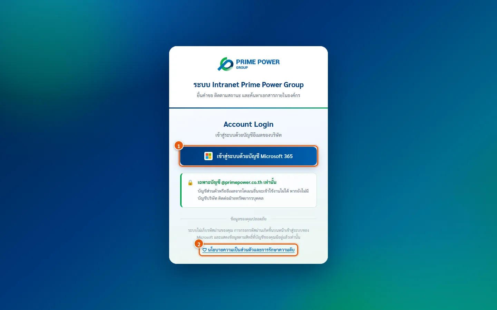
- 1ปุ่มเข้าสู่ระบบด้วยบัญชี Microsoft 365
- 2ลิงก์อ่านนโยบายความเป็นส่วนตัวและการรักษาความลับ (PDPA)
ใช้ได้เฉพาะบัญชี @primepower.co.th — อีเมลส่วนตัว (Gmail, Hotmail) จะเข้าไม่ได้ ระบบไม่เก็บรหัสผ่านของคุณ การพิมพ์รหัสผ่านเกิดขึ้นบนหน้าของ Microsoft เท่านั้น
นโยบายความเป็นส่วนตัว (PDPA)
พนักงานใหม่ควรอ่านนโยบายนี้ก่อนเริ่มใช้งาน ข้อมูลในระบบเป็นข้อมูลภายในบริษัท ห้ามคัดลอกหรือส่งต่อให้บุคคลภายนอก
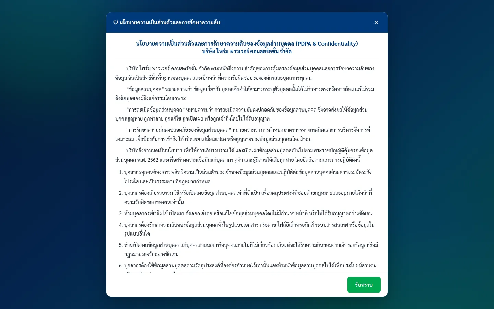
ประกาศ Popup หลังเข้าสู่ระบบ
ถ้ามีประกาศสำคัญ (เช่น วันหยุดประจำปี) จะเด้งขึ้นกลางจอหลังเข้าสู่ระบบ
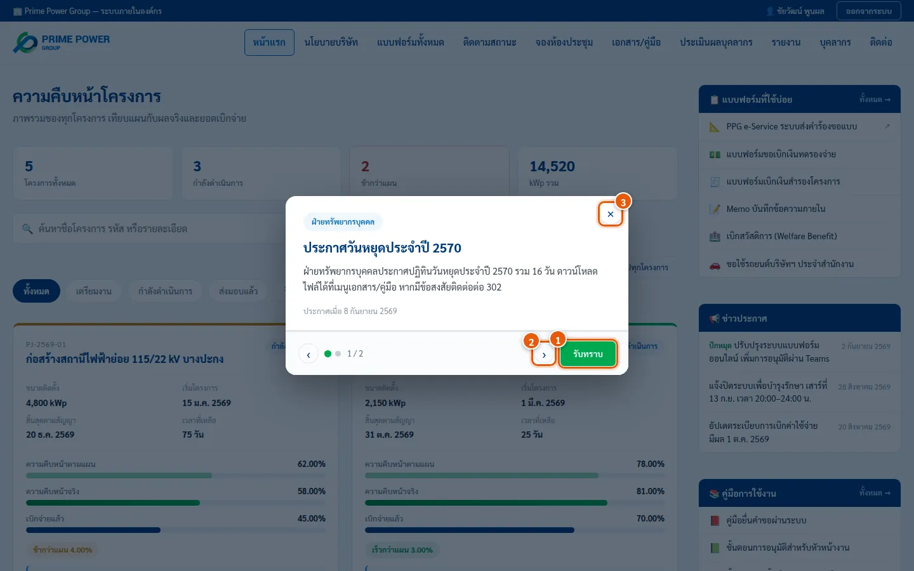
- 1รับทราบ ปิดประกาศ
- 2ลูกศรเลื่อนดูประกาศถัดไป (ถ้ามีหลายเรื่อง ตัวเลข 1/2 บอกลำดับ)
- 3ปุ่ม ✕ ปิดหน้าต่าง
ออกจากระบบ
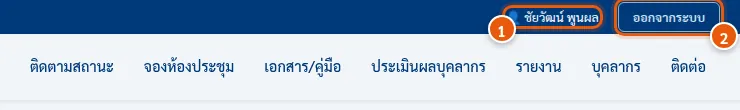
- 1ชื่อบัญชีที่กำลังใช้งาน — ตรวจให้แน่ใจว่าเป็นชื่อของคุณ
- 2ออกจากระบบ — กดทุกครั้งเมื่อใช้เครื่องส่วนกลางหรือเครื่องของคนอื่น
ออกจากระบบอัตโนมัติ: ถ้าไม่ได้ใช้งานนาน 60 นาที ระบบจะออกจากระบบให้เอง เพื่อความปลอดภัย ก่อนครบเวลา 2 นาทีจะมีแถบเตือนพร้อมนับถอยหลัง กด ใช้งานต่อ เพื่อต่อเวลา
2หน้าแรกและเมนู
หน้าแรกรวมสิ่งที่ใช้บ่อยไว้ เปิดมาก็เห็นภาพรวมงานของบริษัทและทางลัดไปยังแบบฟอร์ม
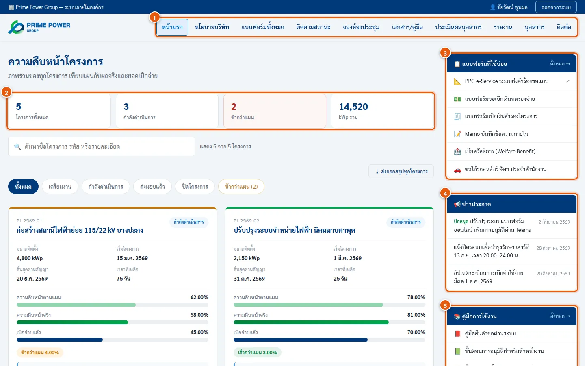
- 1เมนูหลัก — กดเพื่อไปยังแต่ละส่วน ตัวเลขวงกลมสีแดงบนเมนูคืองานที่รอคุณ
- 2ภาพรวมโครงการ — จำนวนโครงการทั้งหมด กำลังดำเนินการ ล่าช้ากว่าแผน และกำลังการผลิตรวม (kWp) · เลื่อนลงดูการ์ดของแต่ละโครงการ
- 3แบบฟอร์มที่ใช้บ่อย — กดชื่อฟอร์มเพื่อไปหน้ากรอกได้ทันที
- 4ข่าวประกาศ — กดหัวข้อเพื่ออ่านรายละเอียดและดูรูป/ไฟล์แนบ
- 5คู่มือการใช้งาน — คู่มือปฏิบัติงานของแต่ละฝ่าย
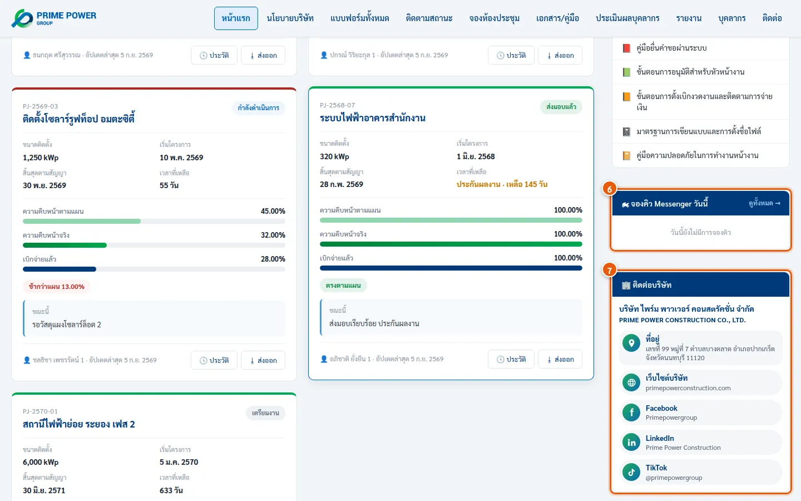
- 6จองคิว Messenger วันนี้ — ดูว่าวันนี้มีใครจองคิวส่งเอกสารไว้เวลาไหน กด ดูทั้งหมด → เพื่อดูปฏิทินคิวทั้งเดือน
- 7ติดต่อบริษัท — ที่อยู่ เว็บไซต์ และโซเชียลมีเดียของบริษัท
ตัวเลขแจ้งเตือนสีแดงบนเมนู
| เมนู | ตัวเลขหมายถึง |
|---|---|
| ติดตามสถานะ | คำขอที่ถึงคิวคุณอนุมัติ + คำขอของคุณที่มีความเคลื่อนไหวแต่ยังไม่ได้เปิดดู (เช่น อนุมัติแล้ว ถูกส่งกลับ) |
| ประเมินผลบุคลากร | ใบประเมินที่รอคุณทำ เช่น รอคุณประเมินลูกทีม หรือรอคุณลงนามรับทราบ |
ตัวเลขอัปเดตเองทุกประมาณ 5 นาที ถ้าอยากเห็นทันทีให้กด F5 เพื่อรีเฟรชหน้า
3นโยบายบริษัท
รวมนโยบายและระเบียบปฏิบัติฉบับที่บังคับใช้ปัจจุบัน พนักงานใหม่ควรอ่านให้ครบทุกฉบับในสัปดาห์แรก
- กดเมนู นโยบายบริษัท
- กดชื่อเอกสาร หรือปุ่ม เปิดอ่าน ท้ายแถว
- หน้าต่างจะแสดงเลขที่เอกสาร ฉบับที่ วันที่ประกาศ เนื้อหา และไฟล์แนบ (รูปภาพแสดงในหน้าต่างเลย ไฟล์ PDF กดเพื่อเปิด)
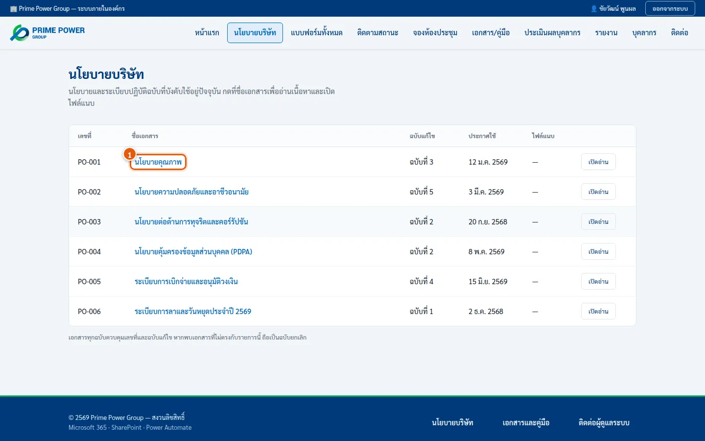
- 1กดชื่อนโยบายเพื่อเปิดอ่าน
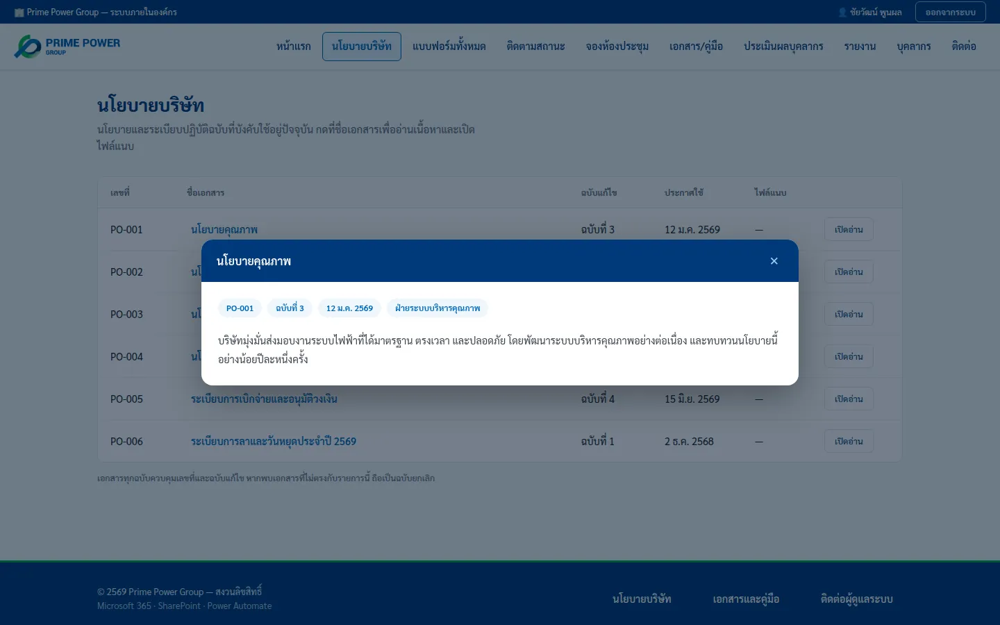
4ยื่นคำขอผ่านแบบฟอร์ม
ทุกคำขอที่เคยเป็นกระดาษ ยื่นผ่านหน้านี้ ระบบส่งต่อให้ผู้อนุมัติตามลำดับเอง และแจ้งเตือนผ่าน Teams
หาแบบฟอร์มที่ต้องการ
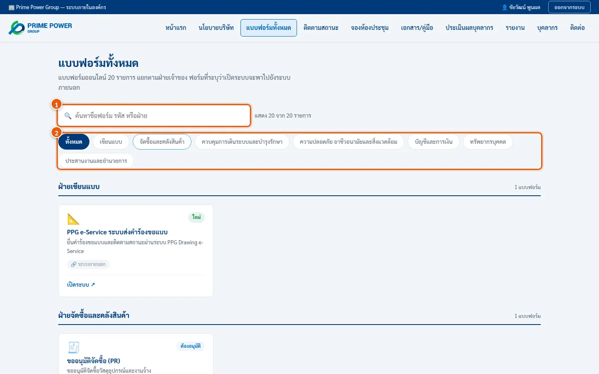
- 1ช่องค้นหา — พิมพ์ชื่อฟอร์ม รหัส หรือชื่อฝ่าย
- 2ปุ่มกรองตามฝ่ายเจ้าของแบบฟอร์ม
- 3การ์ดแบบฟอร์ม — ป้าย ใช้บ่อย ต้องอนุมัติ ใหม่ และเวลาโดยประมาณที่ใช้กรอก
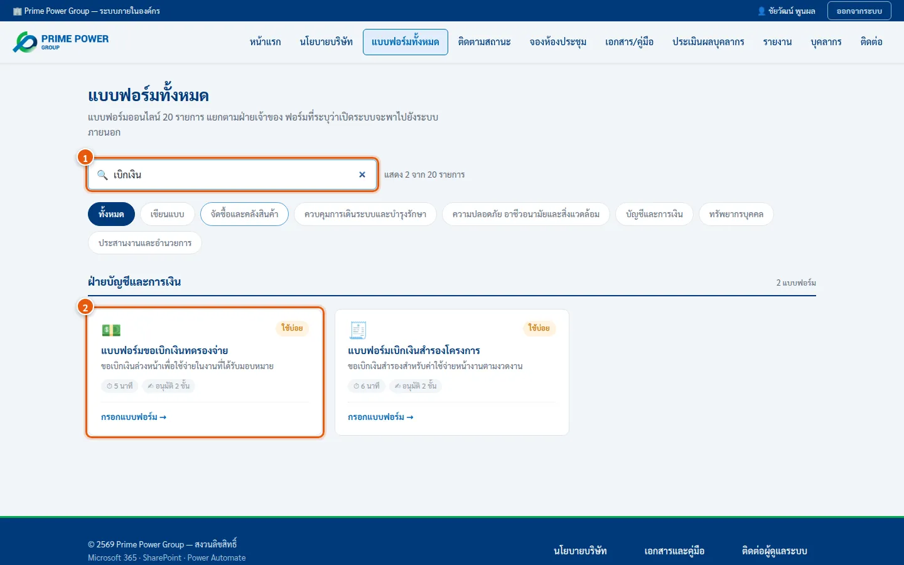
- 1คำค้น
- 2กดการ์ดเพื่อเปิดหน้ากรอก
การ์ดที่เขียนว่า “เปิดระบบ ↗” คือระบบภายนอก เช่น PPG e-Service จะเปิดในแท็บใหม่
ตัวอย่างงานจริง: ขอเบิกเงินทดรองจ่าย 12,500 บาท
สถานการณ์
คุณชัยวัฒน์ต้องซื้อสายไฟและอุปกรณ์ยึดรางเคเบิลเพิ่มสำหรับติดตั้งตู้ MDB หน้างานโครงการบางปะกง ราคา 12,500 บาท จึงขอเบิกเงินทดรองจ่ายล่วงหน้า โดยแนบใบเสนอราคาประกอบ
- เมนู แบบฟอร์มทั้งหมด → กดการ์ด แบบฟอร์มขอเบิกเงินทดรองจ่าย
- ตรวจส่วน ข้อมูลผู้ยื่น — ระบบดึงรหัสพนักงาน ชื่อ อีเมล ฝ่าย แผนก มาใส่ให้เอง (ช่องสีเทาแก้ไม่ได้) ถ้าข้อมูลผิดให้แจ้ง HR
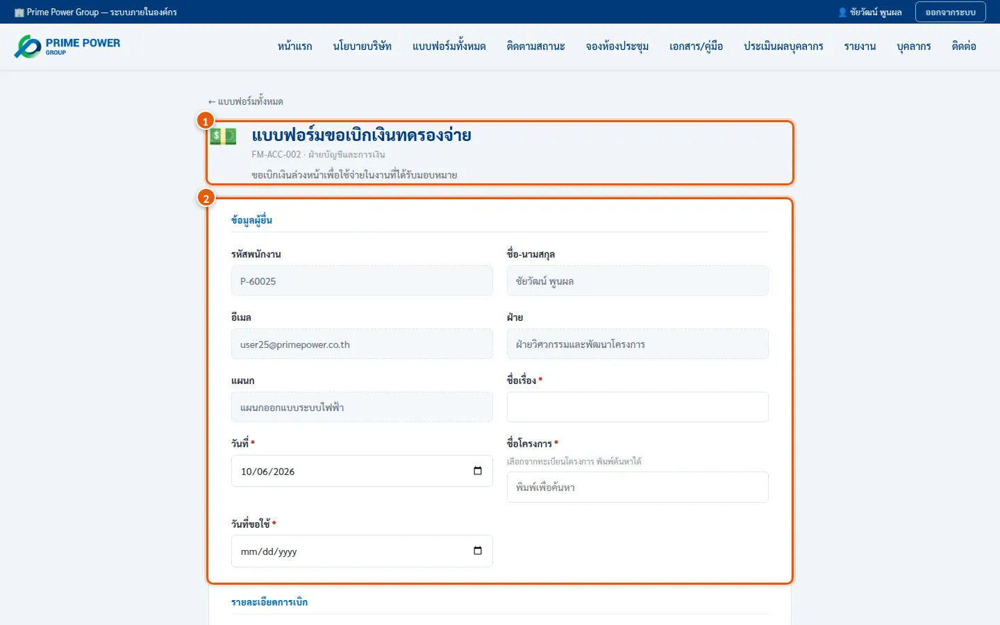
- 1ชื่อแบบฟอร์ม รหัส และฝ่ายเจ้าของ
- 2ข้อมูลผู้ยื่นที่ระบบใส่ให้อัตโนมัติ
- กรอก ชื่อเรื่อง ให้สั้นและสื่อความ เช่น “ขอเบิกเงินทดรองจ่ายค่าวัสดุติดตั้งหน้างาน”
- วันที่ ระบบใส่วันนี้ให้ · ชื่อโครงการ พิมพ์บางคำ เช่น “บางปะกง” แล้วเลือกจากรายการ · วันที่ขอใช้ เลือกวันที่ต้องใช้เงิน
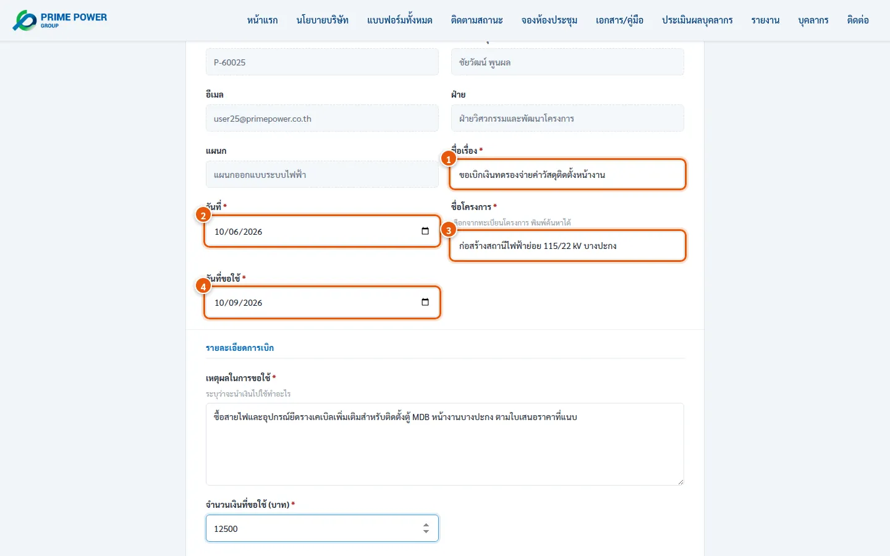
- 1ชื่อเรื่อง
- 2วันที่ยื่น
- 3ชื่อโครงการ (เลือกจากทะเบียนโครงการ)
- 4วันที่ขอใช้เงิน
- กรอก เหตุผลในการขอใช้ ให้ละเอียด — ซื้ออะไร ใช้ที่ไหน ทำไมต้องใช้ ผู้อนุมัติจะได้ไม่ต้องถามกลับ
- กรอก จำนวนเงิน เป็นตัวเลขอย่างเดียว ไม่ต้องใส่จุลภาคหรือคำว่าบาท (เช่น 12500)
- กด + แนบไฟล์ แล้วเลือกใบเสนอราคา/ใบเสร็จ (สูงสุด 5 ไฟล์ ไฟล์ละไม่เกิน 10 MB รองรับรูปภาพและ PDF ถ่ายจากมือถือได้เลย)
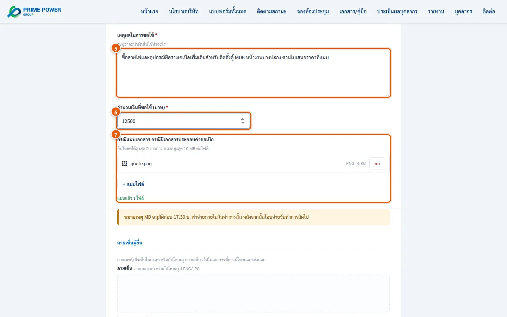
- 5เหตุผลในการขอใช้
- 6จำนวนเงิน (บาท)
- 7ไฟล์แนบ — แนบแล้วจะเห็นชื่อไฟล์ ขนาด และปุ่ม “ลบ”
- อ่าน หมายเหตุ กรอบสีเหลือง (ถ้ามี) — เช่น เงื่อนไขเวลาตัดรอบจ่ายเงิน
- ลงลายเซ็น — ลากเมาส์หรือใช้นิ้วเซ็นในกรอบ หรือกด อัปโหลดรูป ลายเซ็นที่สแกนไว้ · เซ็นผิดกด ล้างลายเซ็น
- (ไม่บังคับ) ⬇ ดาวน์โหลดแบบฟอร์ม — ดูตัวอย่างเอกสารก่อนส่ง
- กด ส่งคำขอ
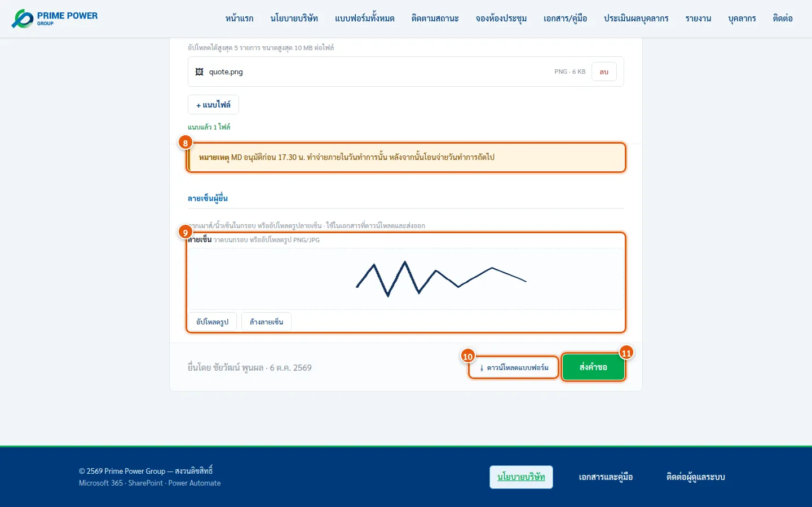
- 8หมายเหตุสำคัญของแบบฟอร์ม
- 9กรอบลายเซ็นผู้ยื่น
- 10ดาวน์โหลดแบบฟอร์มเป็นเอกสาร
- 11ปุ่มส่งคำขอ
- หน้าต่าง ตรวจทานก่อนส่งคำขอ จะสรุปข้อมูลทั้งหมด ตรวจให้ครบ — ถ้าผิดกด ← กลับไปแก้ไข ถ้าถูกต้องกด ยืนยันส่งคำขอ
- ระบบแสดง “ส่งคำขอเรียบร้อย” พร้อมเลขที่คำขอ เช่น FM-ACC-002-001-2026 — จดเลขนี้ไว้อ้างอิงได้
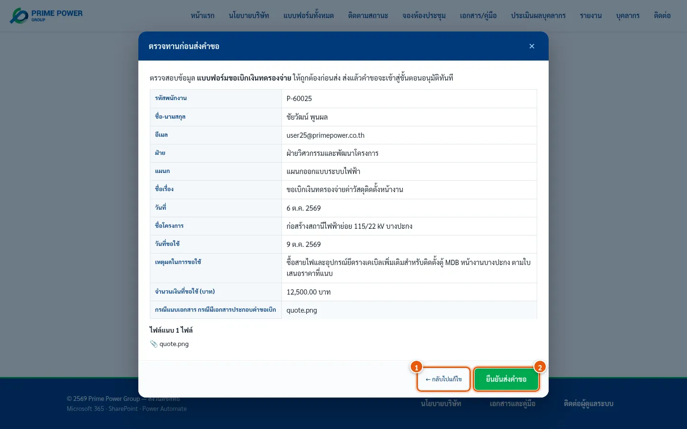
- 1กลับไปแก้ไข
- 2ยืนยันส่งคำขอ
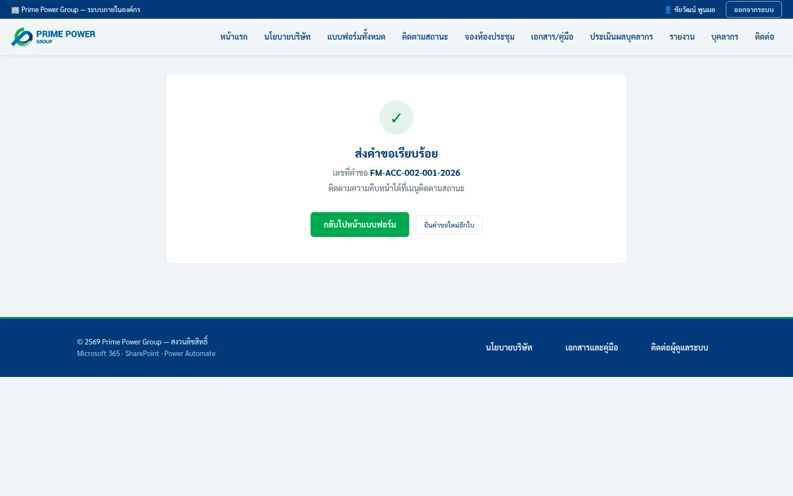
หลังกดส่ง เกิดอะไรขึ้นบ้าง
- ระบบหาผู้อนุมัติลำดับแรกให้เอง (ในตัวอย่างคือผู้บังคับบัญชาของผู้ยื่น — คุณธีรพงศ์)
- ผู้อนุมัติได้รับการ์ดขออนุมัติใน Microsoft Teams → Approvals และเห็นตัวเลขแดงบนเมนูติดตามสถานะ
- ลำดับถัดไปจะได้รับการ์ดเมื่อลำดับก่อนหน้าอนุมัติแล้วเท่านั้น
ช่องที่มี * สีแดงต้องกรอก ถ้าเว้นว่าง ระบบจะไม่ให้ส่ง และขึ้นข้อความสีแดง “กรอกข้อมูลให้ครบก่อนส่ง · ยังขาด: …” บอกชื่อช่องที่ยังไม่ได้กรอก
5ติดตามสถานะคำขอ
ดูได้ตลอดว่าคำขอของคุณถึงใครแล้ว ใครอนุมัติเมื่อไร และมีความเห็นอะไร
- กดเมนู ติดตามสถานะ — กล่อง คำขอของฉัน แสดงคำขอที่คุณยื่น พร้อมสถานะและผู้ที่รออยู่
- กดที่คำขอเพื่อเปิดรายละเอียด
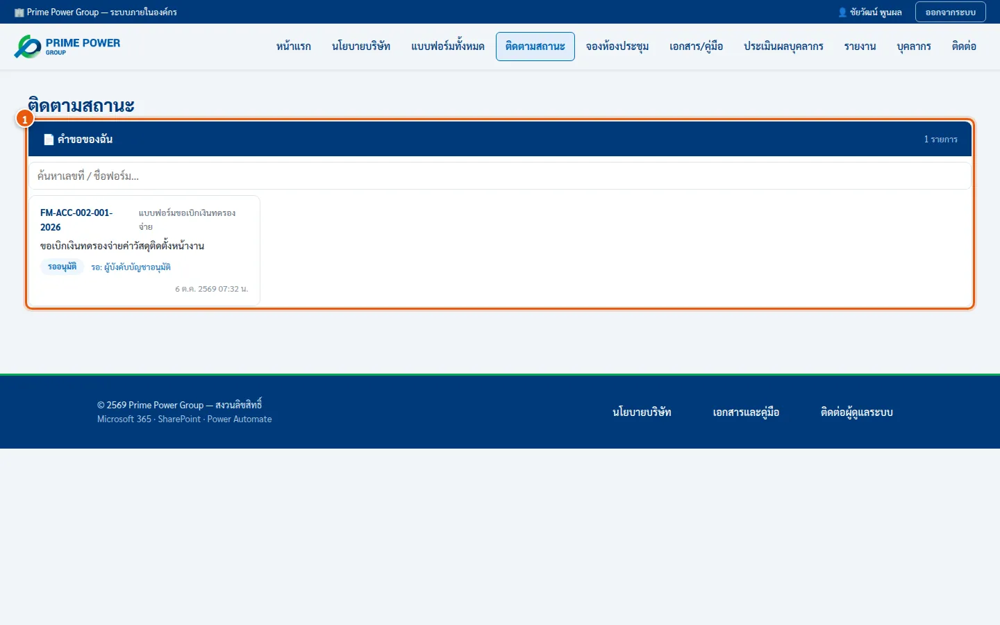
- 1คำขอของฉัน (ค้นหาด้วยเลขที่หรือชื่อฟอร์มได้)
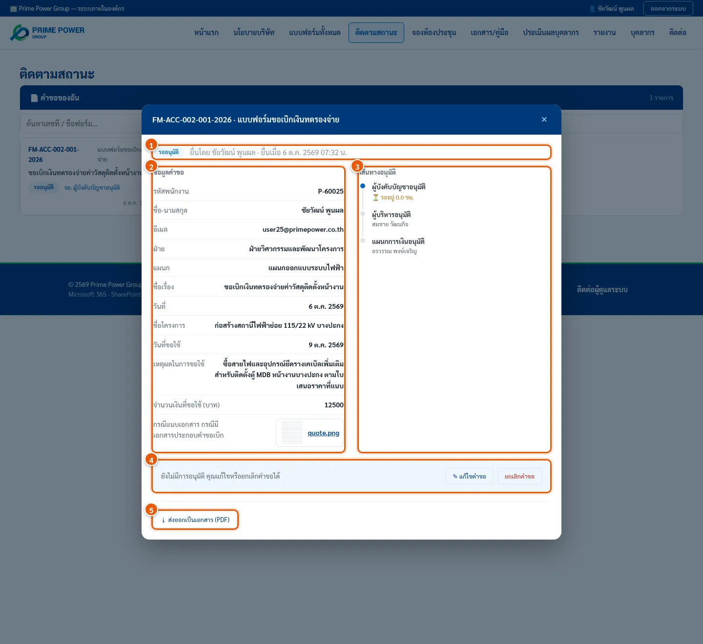
- 1สถานะปัจจุบัน ผู้ยื่น และเวลายื่น
- 2ข้อมูลที่กรอก — ไฟล์แนบกดเปิดดูได้
- 3เส้นทางอนุมัติ — จุดเขียว = ผ่านแล้ว · จุดน้ำเงินกระพริบ = กำลังรอ (บอกว่ารอมานานเท่าไร) · จุดเทา = ยังไม่ถึง
- 4ปุ่มแก้ไข/ยกเลิกคำขอ (ใช้ได้เฉพาะตอนที่ยังไม่มีใครอนุมัติ)
- 5ส่งออกเป็นเอกสาร PDF
ความหมายของสถานะ
| สถานะ | ความหมาย | ต้องทำอะไร |
|---|---|---|
| รออนุมัติ | อยู่ระหว่างรอผู้อนุมัติลำดับใดลำดับหนึ่ง | รอ · ถ้าค้างนาน ติดต่อผู้อนุมัติที่แสดงในเส้นทาง |
| ส่งกลับแก้ไข | ผู้อนุมัติขอให้แก้ไขหรือเพิ่มข้อมูล | อ่านเหตุผล แก้ไข แล้วยื่นใหม่ (บทที่ 6) |
| ไม่อนุมัติ | คำขอถูกปฏิเสธ จบการพิจารณา | อ่านเหตุผล ถ้าจำเป็นให้ยื่นคำขอใหม่ |
| อนุมัติแล้ว | ผ่านครบทุกลำดับ | ดำเนินการตามที่ขอ / รอฝ่ายที่เกี่ยวข้อง |
| เสร็จสิ้น | ปิดงานแล้ว เช่น การเงินโอนเงินและแนบสลิปแล้ว | ตรวจสลิป/ส่งออกเอกสารเก็บไว้ |
| ยกเลิก | ผู้ยื่นยกเลิกเอง หรือฝ่ายจัดซื้อเลือก Cancel | — |
ตัวอย่างต่อ: คำขอได้รับอนุมัติและโอนเงินแล้ว
เมื่อทุกลำดับอนุมัติ และการเงินโอนเงินแล้ว คุณชัยวัฒน์จะได้รับข้อความใน Teams พร้อมรูปสลิป และเห็นตัวเลขแดงบนเมนู พร้อมป้าย ใหม่ ที่คำขอ
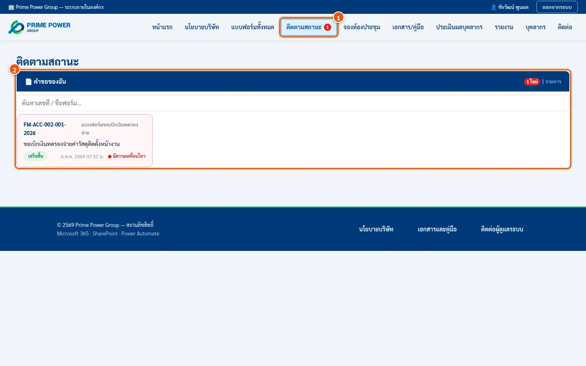
- 1ตัวเลขแดงบนเมนูติดตามสถานะ
- 2คำขอที่มีความเคลื่อนไหวจะมีกรอบสีแดงอ่อนและข้อความ “● มีความเคลื่อนไหว” — เปิดดูแล้วป้ายจะหายไป
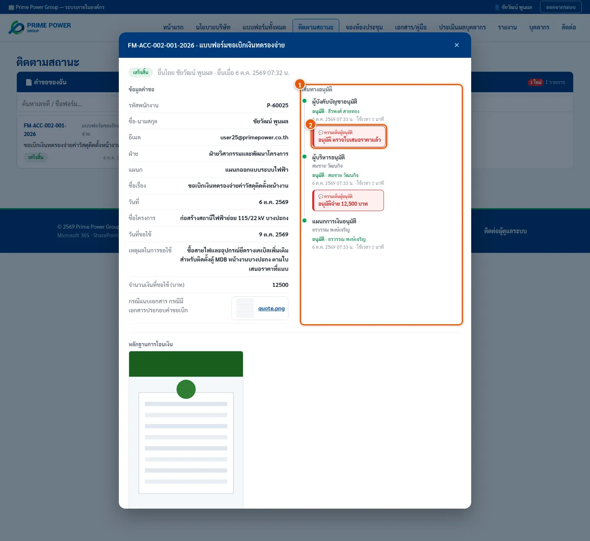
- 1ทุกลำดับเป็นจุดเขียว พร้อมชื่อผู้อนุมัติ วันเวลา และเวลาที่ใช้
- 2ความเห็นผู้อนุมัติแสดงในกรอบสีแดงให้เห็นชัด — อ่านทุกครั้ง เช่น อาจอนุมัติไม่เต็มจำนวน
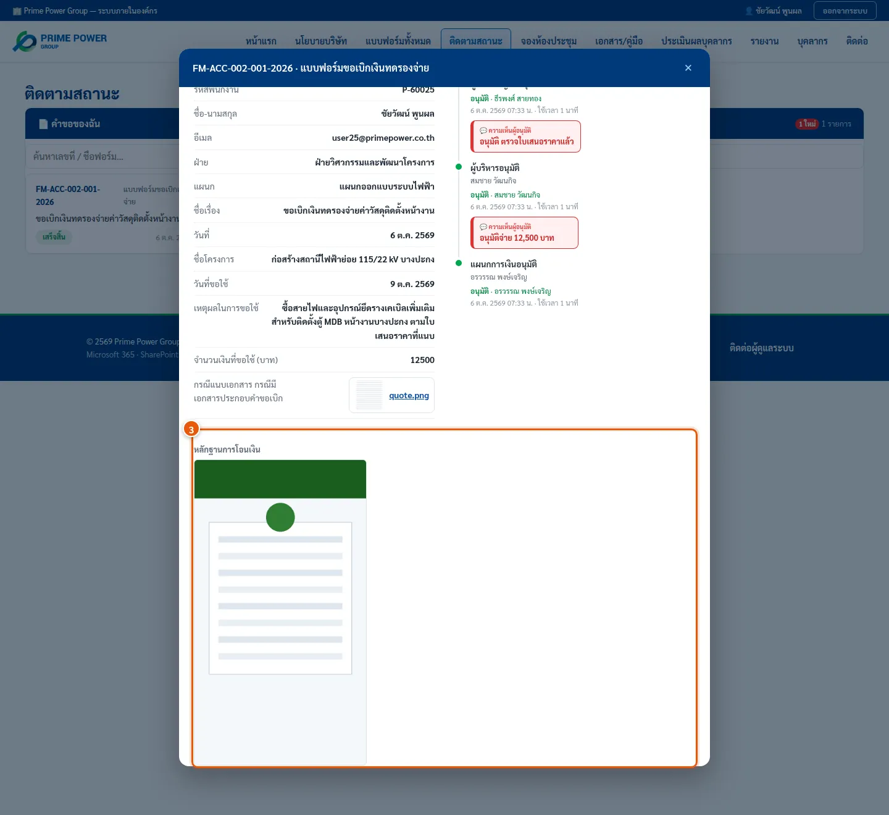
- 3หลักฐานการโอนเงิน ที่การเงินแนบไว้ กดที่รูปเพื่อดูขนาดเต็ม
6ถูกส่งกลับแก้ไข / ยกเลิกคำขอ
สถานการณ์
คุณชัยวัฒน์ยื่นขอเบิกค่าเช่ารถเครน 8,000 บาท แต่ไม่ได้แนบใบเสนอราคา ผู้จัดการแผนกจึงส่งกลับแก้ไข พร้อมเหตุผล “กรุณาแนบใบเสนอราคารถเครนอย่างน้อย 2 เจ้า และระบุเวลาที่ใช้งาน”
- เปิดคำขอจากเมนู ติดตามสถานะ — สถานะเป็น ส่งกลับแก้ไข
- อ่านเหตุผลในกรอบสีแดงที่เส้นทางอนุมัติ และกล่องสีเหลืองด้านล่าง
- กด ✎ แก้ไขและยื่นใหม่ — ระบบเปิดแบบฟอร์มเดิมพร้อมข้อมูลที่เคยกรอก มีป้าย แก้ไข ที่ชื่อฟอร์ม
- แก้ไข/แนบไฟล์เพิ่มตามที่ขอ แล้วกด ส่งคำขอ — คำขอจะเริ่มอนุมัติใหม่จากลำดับแรก โดยใช้เลขที่เดิม
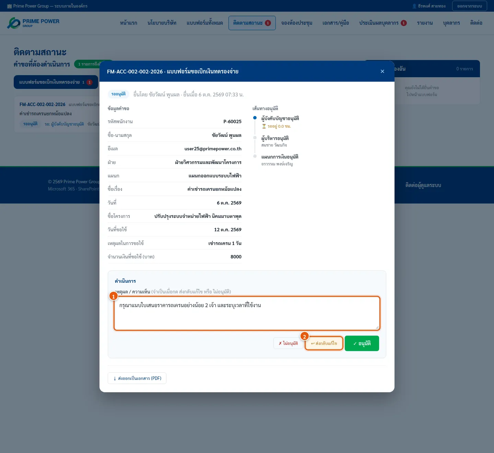
- 1พิมพ์เหตุผลที่ต้องแก้
- 2กด ↩ ส่งกลับแก้ไข
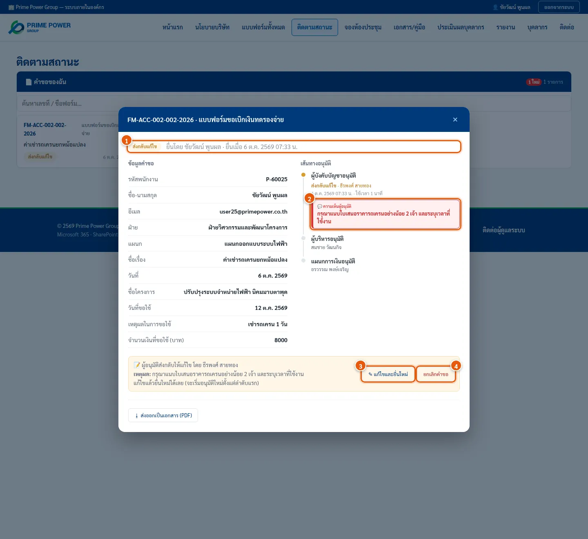
- 1สถานะส่งกลับแก้ไข
- 2เหตุผลจากผู้อนุมัติ
- 3แก้ไขและยื่นใหม่
- 4ยกเลิกคำขอ
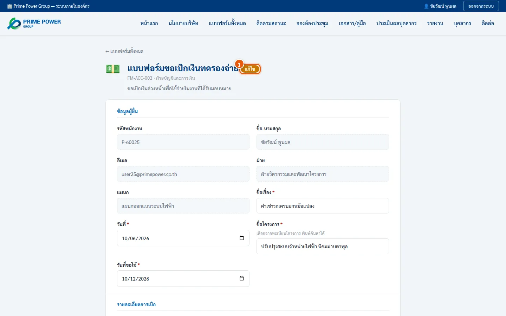
- 1ป้าย “แก้ไข” — ข้อมูลเดิมถูกใส่ไว้ให้แล้ว
- 2แก้ช่องที่ผู้อนุมัติขอ
ยกเลิกคำขอ / แก้ไขก่อนมีคนอนุมัติ
- ถ้ายังไม่มีใครอนุมัติ จะมีปุ่ม ✎ แก้ไขคำขอ และ ยกเลิกคำขอ ในหน้าต่างรายละเอียด
- เมื่อมีผู้อนุมัติดำเนินการไปแล้ว จะแก้ไขเองไม่ได้ — ให้ติดต่อผู้อนุมัติเพื่อขอให้ส่งกลับแก้ไข
- การยกเลิกเป็นการถาวร ต้องยื่นใหม่ถ้าต้องการขออีกครั้ง
7ส่งออกเอกสาร PDF
พิมพ์หรือบันทึกคำขอเป็นเอกสารที่มีหัวกระดาษบริษัท ข้อมูลครบ และลายเซ็น/ผลการอนุมัติจากระบบ
- เปิดคำขอ → กด ⬇ ส่งออกเป็นเอกสาร (PDF)
- ถ้ายังไม่มีลายเซ็นหรืออยากเปลี่ยน เปิดหัวข้อ ✍ ลายเซ็นผู้ยื่น เซ็นแล้วกด ใส่ลายเซ็นนี้ในเอกสาร — ลายเซ็นขึ้นในเอกสารทันที
- กด พิมพ์ / บันทึกเป็น PDF → อ่านข้อความแจ้งเรื่องเอกสารอิเล็กทรอนิกส์ → ในหน้าต่างพิมพ์ เลือกเครื่องพิมพ์ หรือเลือก Save as PDF / บันทึกเป็น PDF
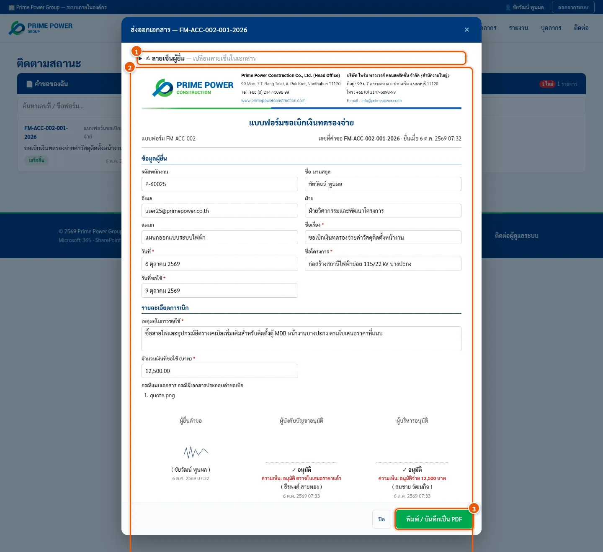
- 1ลายเซ็นผู้ยื่น (เปลี่ยนได้)
- 2ตัวอย่างเอกสาร — ช่องลงนามผู้อนุมัติแสดงผล “✓ อนุมัติ” ความเห็น ชื่อ และเวลาจากระบบ
- 3พิมพ์ / บันทึกเป็น PDF
แบบฟอร์มบางชนิดมีหน้าตาตามต้นฉบับ ISO โดยเฉพาะ เช่น ใบขอสั่งซื้อ (PR), บันทึกข้อความภายใน (Memo), เบิกค่าใช้จ่ายในการเดินทาง, ใบรับรองแทนใบเสร็จ — เอกสารที่ส่งออกจะเหมือนแบบฟอร์มกระดาษเดิม
8อนุมัติคำขอ (สำหรับหัวหน้าและผู้อนุมัติ)
อนุมัติได้ 2 ช่องทาง: ในเว็บ Intranet (บทนี้) หรือในแอป Teams (บทที่ 9) ผลเหมือนกัน ใช้ช่องทางใดช่องทางหนึ่ง
- เมื่อมีคำขอถึงคิวคุณ จะเห็นตัวเลขแดงที่เมนู ติดตามสถานะ → กดเข้าไป
- ส่วน คำขอที่ต้องดำเนินการ จะแสดงคำขอที่รอคุณ (มีป้าย ถึงคิวคุณ) — กดเพื่อเปิด
- อ่านข้อมูล เปิดไฟล์แนบตรวจสอบ
- พิมพ์ เหตุผล/ความเห็น (จำเป็นเมื่อส่งกลับหรือไม่อนุมัติ — ถ้าอนุมัติจะเว้นว่างก็ได้)
- เลือกกดปุ่มใดปุ่มหนึ่ง
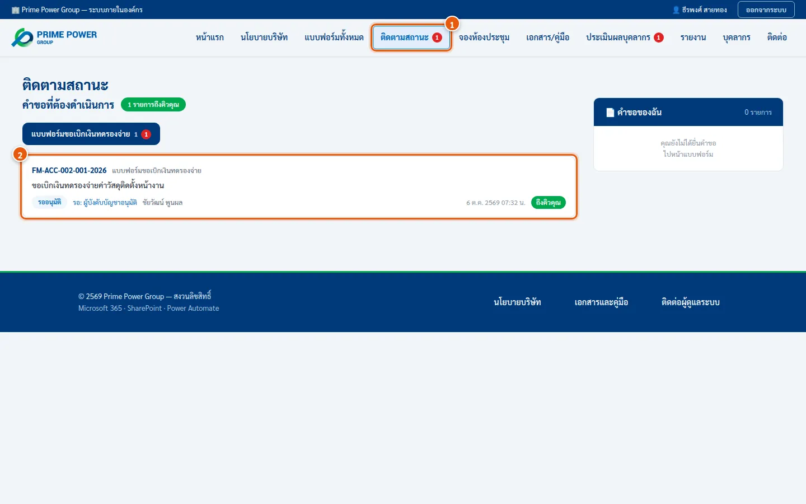
- 1ตัวเลขงานที่รอคุณ
- 2คำขอที่ถึงคิวคุณอนุมัติ — กดเพื่อเปิด
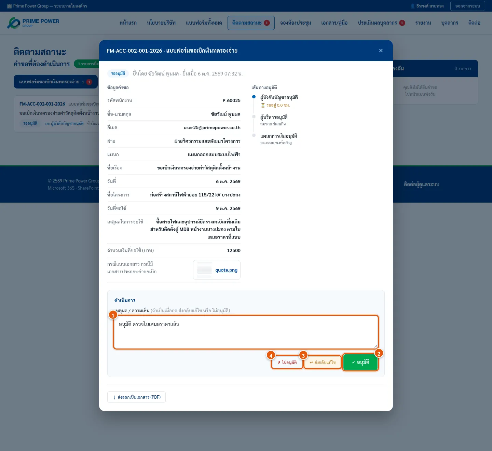
- 1ช่องความเห็น — ข้อความนี้จะแสดงเป็นกรอบแดงให้ผู้ยื่นเห็น
- 2✓ อนุมัติ — ส่งต่อให้ลำดับถัดไป (หรือจบงานถ้าเป็นลำดับสุดท้าย)
- 3↩ ส่งกลับแก้ไข — คืนให้ผู้ยื่นแก้ แล้วเริ่มอนุมัติใหม่
- 4✗ ไม่อนุมัติ — ปฏิเสธและจบคำขอ
ตัวอย่างความเห็นที่ดี
- อนุมัติ: “อนุมัติ ตรวจใบเสนอราคาแล้ว” · “อนุมัติจ่าย 12,500 บาท”
- ส่งกลับ: “กรุณาแนบใบเสนอราคาอย่างน้อย 2 เจ้า และระบุเวลาที่ใช้งาน”
- ไม่อนุมัติ: “งบโครงการนี้ใช้ครบแล้ว ให้เบิกผ่านงบส่วนกลางแทน”
ใบขอสั่งซื้อ (PR) ต้องเซ็นชื่อทุกขั้น ก่อนกดอนุมัติ (บทที่ N1)
ผู้อนุมัติลำดับสุดท้ายมีกรอบ ✍ ลายเซ็นผู้อนุมัติ เพิ่ม — ลายเซ็นนี้ใช้ในเอกสารที่ส่งออก (ถ้าไม่เซ็นจะใช้ลายเซ็นในทะเบียนบุคลากร)
ถ้าคำขอกำหนดให้ “ต้องอนุมัติครบทุกคน” ในลำดับเดียวกัน ลำดับนั้นจะผ่านเมื่อทุกคนกดอนุมัติแล้ว
ถ้ากดแล้วขึ้นข้อความว่า “มีคนดำเนินการไปแล้ว” แปลว่ามีผู้อนุมัติอีกคนหรือคุณเองกดผ่าน Teams ไปก่อน ระบบจะรีเฟรชให้เห็นสถานะล่าสุด ไม่ต้องกดซ้ำ
9อนุมัติผ่าน Microsoft Teams
ผู้อนุมัติไม่ต้องเปิดเว็บก็อนุมัติได้ ระบบส่งการ์ดขออนุมัติไปที่ Teams ทุกครั้งที่ถึงคิว
- เปิดแอป Microsoft Teams (คอมหรือมือถือ) → แถบซ้ายกด Approvals (ถ้าไม่เห็น กด “…” แล้วค้นหาคำว่า Approvals)
- แท็บ Received จะมีการ์ดชื่อ “ขออนุมัติ FM-xxx-xxx-2569 จาก …” แสดงชื่อผู้ยื่น ฝ่าย แบบฟอร์ม
- กดการ์ดเพื่อดูรายละเอียด · กด เปิดดูรายละเอียดคำขอ ถ้าต้องการดูข้อมูลเต็มหรือไฟล์แนบในเว็บ
- เลือก อนุมัติ / ส่งกลับแก้ไข / ไม่อนุมัติ — ถ้าส่งกลับหรือไม่อนุมัติ ต้องพิมพ์เหตุผลในช่อง Comments
- กด Submit — ภายในไม่กี่นาที สถานะในเว็บจะเปลี่ยนตาม และการ์ดถูกส่งต่อให้ลำดับถัดไป
ข้อควรระวัง: ถ้าคุณเป็นผู้อนุมัติหลายลำดับในคำขอเดียว (เช่น ลำดับ 1 และ 2) จะมีการ์ดชื่อเดียวกัน 2 ใบ — ให้อนุมัติใบที่ส่งมาล่าสุด
ถ้าอนุมัติในเว็บไปแล้ว การ์ดใบเก่าใน Teams ที่ยังค้างอยู่ไม่มีผล (ระบบกันไม่ให้การ์ดเก่าเขียนทับ) ไม่ต้องกดซ้ำ
ถ้ากดอนุมัติใน Teams แล้วผ่านไปนานกว่า 10 นาทีสถานะในเว็บยังไม่เปลี่ยน ให้กดอนุมัติในเว็บแทน และแจ้งผู้ดูแลระบบพร้อมเลขที่คำขอ
10ฝ่ายการเงิน: อนุมัติโอนเงิน แนบสลิป และปิดงาน
ใช้กับ แบบฟอร์มขอเบิกเงินทดรองจ่าย และ แบบฟอร์มเบิกเงินสำรองโครงการ — ขั้นสุดท้ายต้องแนบหลักฐานการโอนเงินก่อนปิดงาน
ตัวอย่างต่อ
คุณธีรพงศ์และคุณสมชายอนุมัติแล้ว คำขอ FM-ACC-002-001-2026 มาถึงคุณอรวรรณ (การเงิน) ซึ่งโอนเงิน 12,500 บาทผ่านแอปธนาคารเรียบร้อย และแคปหน้าจอสลิปไว้
- เปิดคำขอ — ลำดับสุดท้ายจะเห็นปุ่ม ✓ อนุมัติ (แนบสลิปโอนเงิน) แทนปุ่มอนุมัติปกติ
- กดปุ่ม → หน้าต่าง แนบสลิปการโอนเงิน เด้งขึ้น แนบได้ 3 วิธี:
- คลิกในกรอบเพื่อเลือกไฟล์ (รูปหรือ PDF)
- ลากไฟล์มาวางในกรอบ
- แคปหน้าจอสลิปไว้ แล้วกด Ctrl + V วางได้เลย
- รอข้อความ “✓ แนบแล้ว …” แล้วกด ✓ ยืนยันอนุมัติและปิดงาน
- ระบบปิดงานเป็น เสร็จสิ้น และส่งข้อความ Teams พร้อมรูปสลิปถึงผู้ยื่นอัตโนมัติ — มุมล่างของจอจะขึ้นแถบเขียว “✓ แจ้ง … ทาง Teams พร้อมสลิปแล้ว”
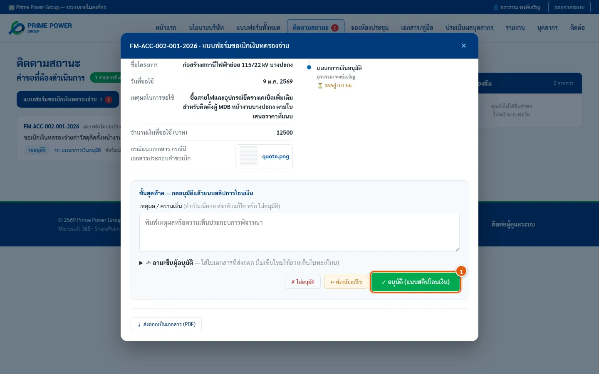
- 1ปุ่มอนุมัติ (แนบสลิปโอนเงิน)
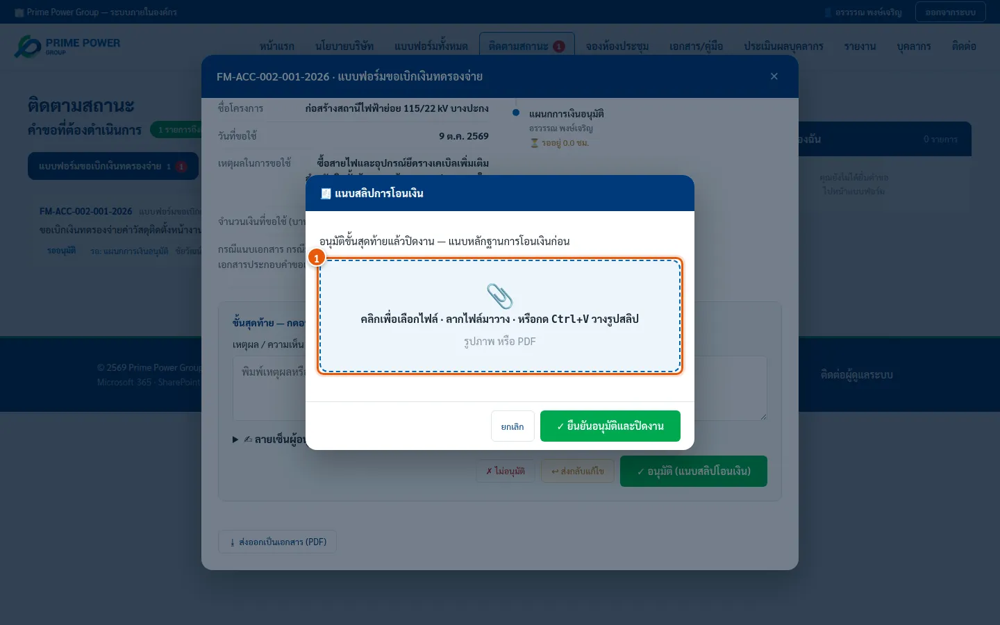
- 1คลิก / ลากไฟล์ / Ctrl+V
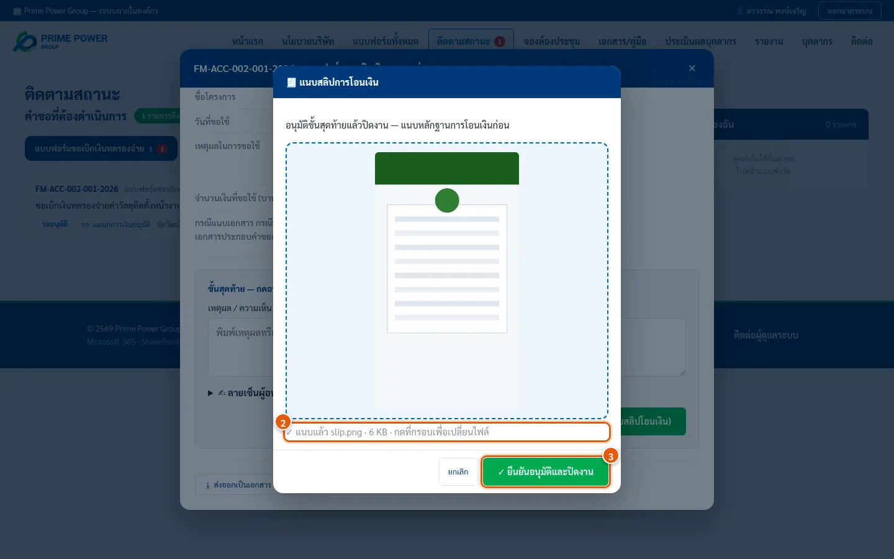
- 2ข้อความยืนยันการแนบ
- 3ยืนยันอนุมัติและปิดงาน
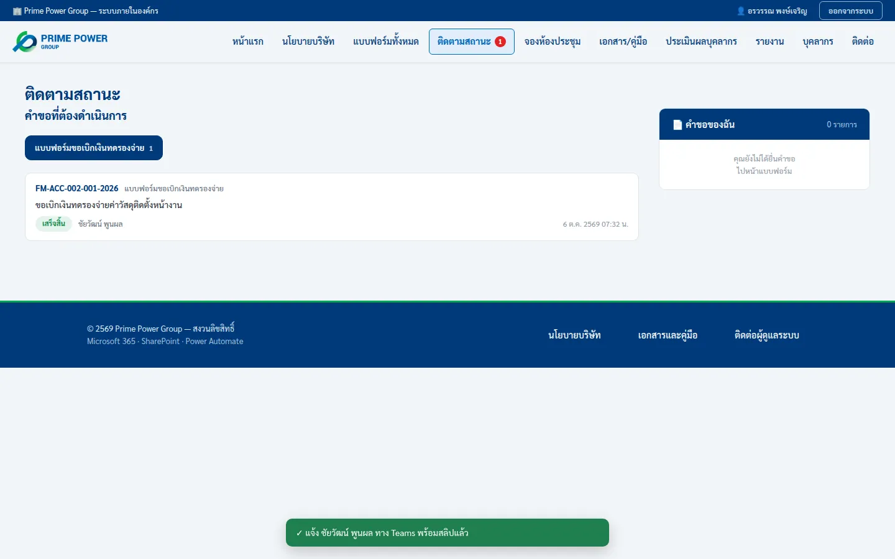
ข้อความ Teams ส่งในนามบัญชีของผู้อนุมัติฝ่ายการเงินถึงผู้ยื่นโดยตรง ผู้ยื่นจะเห็นรูปสลิปในแชตและตอบกลับในแชตนั้นได้ · ถ้าแถบด้านล่างเป็นสีแดง แปลว่าส่ง Teams ไม่สำเร็จ แต่การอนุมัติและปิดงานบันทึกเรียบร้อยแล้ว — แจ้งผู้ยื่นทางอื่นและแจ้งผู้ดูแลระบบ
ถ้ากด ยกเลิก ในหน้าต่างแนบสลิป จะยังไม่อนุมัติ คำขอยังอยู่ที่คุณ
N1ใบขอสั่งซื้อ (PR) — ยื่นและลงนามทุกขั้น ใหม่
แบบฟอร์ม FM-PUR-004 ใบขอสั่งซื้อ (Purchase Requisition) ทุกคนในเส้นทางต้องเซ็นชื่อในขั้นของตัวเอง ลายเซ็นจะลงช่องของขั้นนั้นในใบขอสั่งซื้อที่ส่งออกเป็น PDF
| ขั้น | ชื่อขั้น | ใครเป็นคนทำ |
|---|---|---|
| 0 | ผู้ขอซื้อ | ผู้ยื่นคำขอ — กรอกรายการ เลือกโครงการ และเซ็นชื่อก่อนส่ง |
| 1 | ผู้ทบทวน | คนใดคนหนึ่งในฝ่ายที่กำหนด (เช่น ฝ่ายวิศวกรรม) อนุมัติก็ผ่าน |
| 2 | ผู้อนุมัติ | ผู้จัดการฝ่ายที่กำหนด หรือผู้จัดการโครงการ / ผู้รับผิดชอบหลักของโครงการที่เลือก |
| 3 | ผู้อำนวยการโครงการ | ไม่บังคับ — กด “ข้ามขั้นนี้” ได้ · ถ้าโครงการไม่มีผู้อำนวยการ ระบบข้ามให้เอง |
| 4 | ฝ่ายจัดซื้อ | อัปเดตสถานะการสั่งซื้อจนส่งของ (บทที่ N2) |
ผู้ยื่น: กรอกและส่ง
- เมนู แบบฟอร์มทั้งหมด → ใบขอสั่งซื้อ (PURCHASE REQUISITION)
- ช่อง โครงการ: พิมพ์ชื่อหรือรหัสโครงการแล้วเลือกจากรายการ · ถ้าไม่ใช่งานโครงการ เลือก “ไม่เกี่ยวกับโครงการ” · งานบำรุงรักษาโรงไฟฟ้า เลือก “งาน O&M” (บท N8)
- กรอกรายการสินค้า จำนวน และเหตุผล แนบใบเสนอราคา/รูปประกอบ (ถ้ามี)
- เซ็นชื่อในกรอบ ลายเซ็นผู้ยื่น (ลากเมาส์/นิ้ว หรือ อัปโหลดรูป) แล้วกด ส่งคำขอ — ระบบออกเลข PRให้อัตโนมัติ (บท N7)
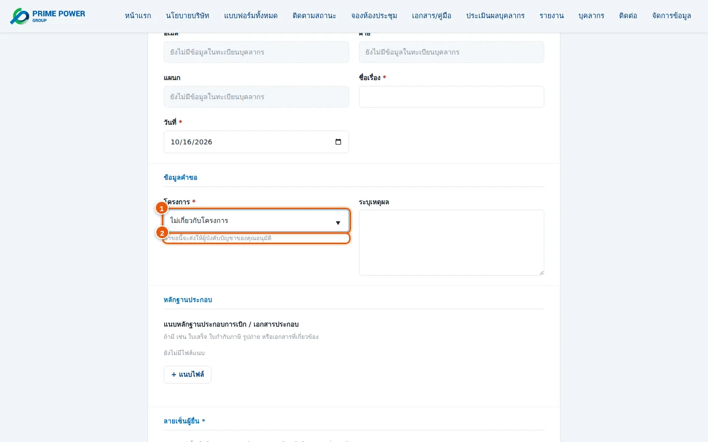
- 1ช่องโครงการ — ต้องเลือกจากรายการเท่านั้น (พิมพ์ชื่อที่ไม่มีในระบบจะส่งไม่ได้)
- 2ข้อความบอกว่าคำขอนี้จะส่งให้ใครอนุมัติ
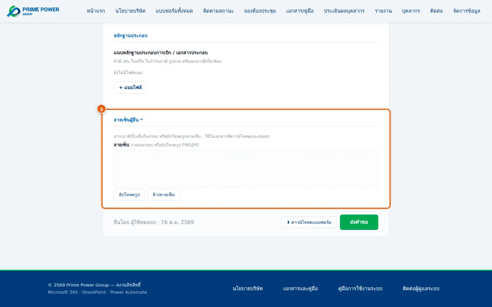
- 3ลายเซ็นผู้ยื่น — จำเป็น ถ้าไม่เซ็นจะกดส่งไม่ได้
คำขอจะไปหาใคร: เลือก “ไม่เกี่ยวกับโครงการ” → ส่งให้ผู้บังคับบัญชาของคุณอนุมัติ · เลือกโครงการ → ส่งให้ผู้จัดการโครงการ/ผู้รับผิดชอบโครงการนั้น · ถ้าคุณไม่ได้อยู่ในทีมโครงการที่เลือก ระบบเพิ่มผู้บังคับบัญชาของคุณให้อนุมัติด้วย
ผู้อนุมัติ: เซ็นแล้วกดอนุมัติ
- เปิดคำขอที่ถึงคิว (เหมือนบทที่ 8) ตรวจรายการและไฟล์แนบ
- เซ็นในกรอบ ✍ ลายเซ็นผู้อนุมัติ * — จำเป็นทุกขั้น ไม่ใช่เฉพาะขั้นสุดท้าย
- กด ✓ อนุมัติ · ส่งกลับแก้ไข / ไม่อนุมัติ ไม่ต้องเซ็น แต่ต้องพิมพ์เหตุผล
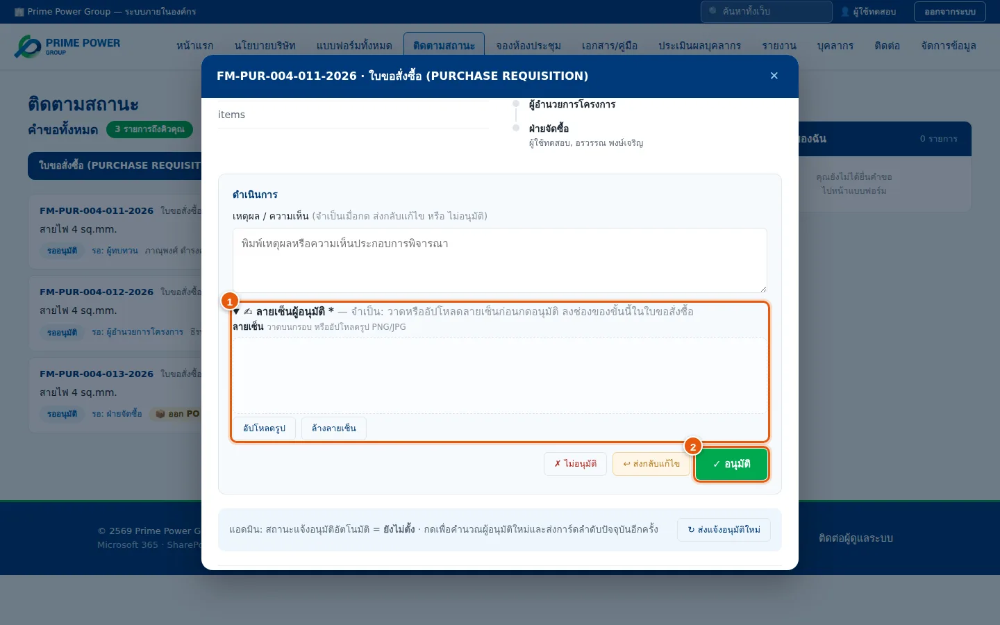
- 1กรอบลายเซ็นของขั้นนี้
- 2กดอนุมัติหลังเซ็นแล้ว
ใบขอสั่งซื้ออนุมัติได้ในเว็บเท่านั้น เพราะต้องเซ็นชื่อทุกขั้น — อีเมล/Teams จะส่งแค่ข้อความ “ถึงคิวคุณแล้ว — กรุณาเซ็นและอนุมัติ” พร้อมลิงก์เปิดคำขอ (บท N7)
ผู้อำนวยการโครงการ (ขั้นไม่บังคับ) จะเห็นปุ่ม ⏭ ข้ามขั้นนี้ เพิ่ม — กดเมื่อไม่ต้องการพิจารณา คำขอจะไปฝ่ายจัดซื้อทันที
N2ฝ่ายจัดซื้อ: อัปเดตสถานะและปิดงาน ใหม่
ฝ่ายจัดซื้อได้รับแจ้งตั้งแต่ผู้ยื่นกดส่ง (ดูได้อย่างเดียว เพื่อเตรียมงาน) และได้รับแจ้งอีกครั้งเมื่อ ถึงคิวคุณ — ขั้นนี้ไม่มีปุ่มอนุมัติ ใช้ อัปเดตสถานะ แทน
- เปิดคำขอ → กล่อง 📦 อัปเดตสถานะงานจัดซื้อ — ช่อง PR No. และ วันที่ออก PR ระบบเติมให้แล้วตั้งแต่ผู้ยื่นกดส่ง แก้ได้ถ้าจำเป็น (ห้ามซ้ำกับใบอื่น)
- เลือก สถานะ: เบิก Store · รับ PR · รับใบเสนอราคา · ออก PO แล้ว · ส่ง Sup แล้ว · ส่งของแล้ว · Cancel
- พิมพ์ หมายเหตุ (ไม่บังคับ) เช่น เลขที่ PO หรือชื่อผู้ขาย
- ครั้งแรกให้เซ็นชื่อฝ่ายจัดซื้อ (เซ็นครั้งเดียว ลงช่องฝ่ายจัดซื้อในใบขอสั่งซื้อ)
- กด 💾 บันทึกสถานะ — อัปเดตซ้ำได้เรื่อย ๆ ทุกครั้งจะบันทึกในเส้นทางอนุมัติให้ผู้ยื่นเห็น
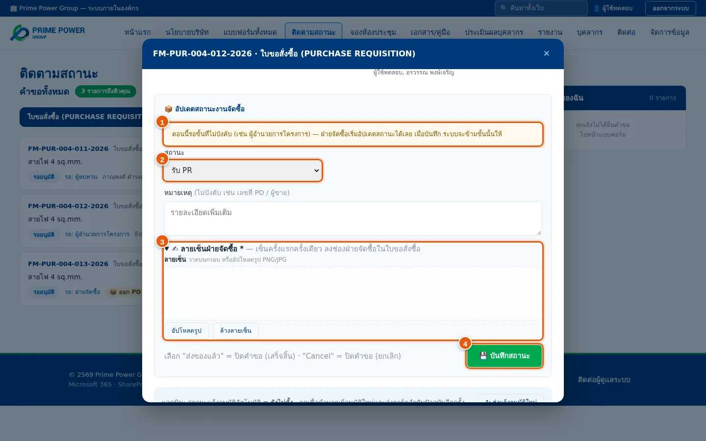
- 1ข้อความนี้ขึ้นเมื่อยังรอขั้นที่ไม่บังคับ (เช่น ผู้อำนวยการโครงการ) — จัดซื้อเริ่มงานได้เลย ระบบข้ามขั้นนั้นให้
- 2เลือกสถานะ
- 3ลายเซ็นฝ่ายจัดซื้อ (ครั้งแรกครั้งเดียว)
- 4บันทึก
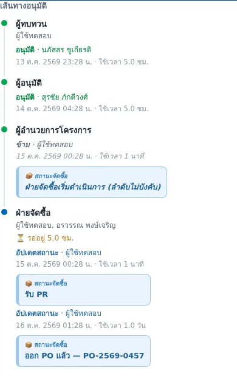
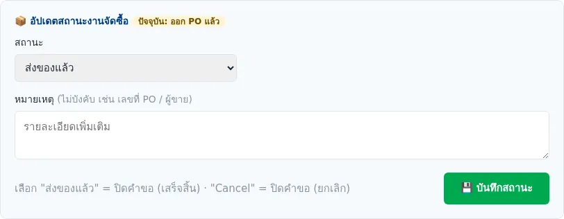
ส่งของแล้ว = ปิดคำขอเป็น เสร็จสิ้น · Cancel = ปิดคำขอเป็นยกเลิก — ทั้งสองแบบระบบถามยืนยันก่อน และแก้ไขต่อไม่ได้
อย่ากดอนุมัติในการ์ด Teams/อีเมลของขั้นฝ่ายจัดซื้อ ให้อัปเดตสถานะในเว็บเท่านั้น
N3ค้นหาทั้งเว็บ ใหม่
หาคน แบบฟอร์ม นโยบาย เอกสาร โครงการ หรือคำขอ จากช่องเดียว
- คลิกช่อง 🔍 ค้นหาทั้งเว็บ แถบบนสุด (หรือกดปุ่ม / บนคีย์บอร์ดที่หน้าไหนก็ได้)
- พิมพ์คำค้น เช่น ชื่อเล่น เบอร์ต่อ รหัสแบบฟอร์ม เลขที่คำขอ แล้วกด Enter
- ผลแยกเป็นหมวด กดชื่อเพื่อเปิด · กดชื่อคนเพื่อดูการ์ดข้อมูลติดต่อ
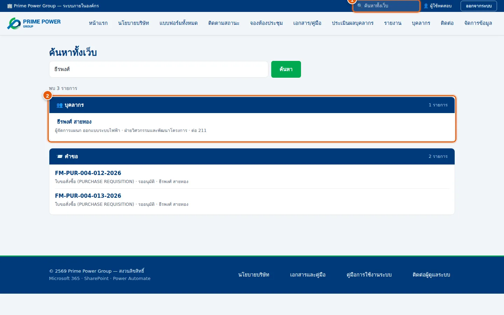
- 1ช่องค้นหาแถบบน
- 2ผลการค้นหาแยกหมวด
พิมพ์หลายคำคั่นด้วยเว้นวรรคเพื่อให้แคบลง เช่น “ธีรพงศ์ PUR” · หมวดคำขอแสดงเฉพาะคำขอของคุณที่ยังไม่ปิด (ผู้บริหารและแอดมินเห็นทุกใบ)
N4ผู้ปฏิบัติแทนช่วงลา และการมองเห็นคำขอ ใหม่
ตั้งผู้ปฏิบัติแทนเมื่อลา/เดินทาง
แจ้ง HR/ผู้ดูแลระบบให้ตั้งค่าในทะเบียนบุคลากรของคุณ (เมนู จัดการข้อมูล → บุคลากร → แก้ไข)
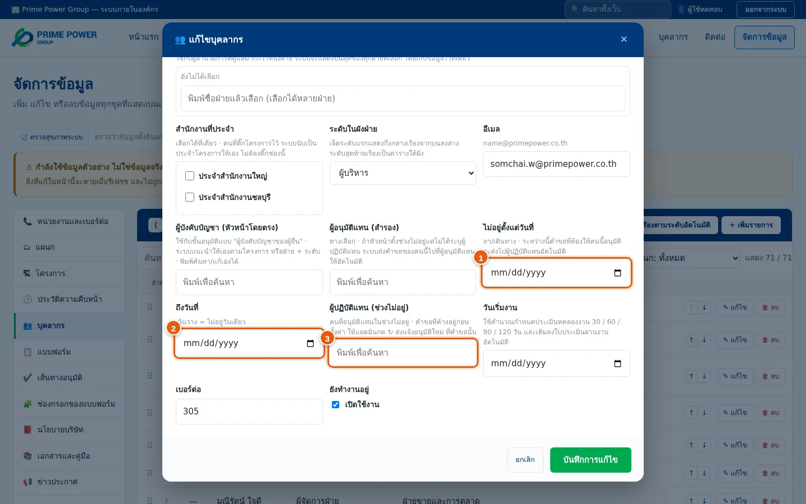
- 1ไม่อยู่ตั้งแต่วันที่
- 2ถึงวันที่ (เว้นว่าง = ไม่อยู่วันเดียว)
- 3ผู้ปฏิบัติแทน — คำขอที่ต้องให้คุณอนุมัติในช่วงนี้จะไปหาคนนี้แทนอัตโนมัติ
คำขอที่ค้างอยู่ก่อนวันลา: แอดมินกด ↻ ส่งแจ้งอนุมัติใหม่ ในคำขอ เพื่อส่งการ์ดให้ผู้ปฏิบัติแทน · เมื่อพ้นวันที่กำหนด ระบบกลับไปใช้ผู้อนุมัติตัวจริงเอง
เมื่อมีคนอนุมัติไปก่อนแล้ว
ถ้าขั้นนั้นมีผู้อนุมัติหลายคน (คนใดคนหนึ่งอนุมัติก็ผ่าน) เมื่อมีคนกดไปแล้ว — ในเว็บ, Teams หรืออีเมล — ปุ่มในหน้าของคนอื่นจะหายไปและขึ้นข้อความ “⚠ (ชื่อ) อนุมัติไปแล้ว” ไม่ต้องกดซ้ำ
ผู้บริหารดูคำขอทั้งหมด
ผู้บริหารที่กำหนด (ตั้งค่าระบบ → RequestViewers) เห็นคำขอทุกใบในเมนู ติดตามสถานะ และในการค้นหา แต่ดูได้อย่างเดียว — จะอนุมัติได้เฉพาะคำขอที่มีชื่ออยู่ในเส้นทางอนุมัติ ใบอื่นจะขึ้นป้าย “👁 ดูได้อย่างเดียว (ผู้บริหาร)”
N5สำหรับผู้ดูแลระบบ: ตั้งเส้นทางอนุมัติ ใหม่
เมนู จัดการข้อมูล → แบบฟอร์ม → แก้ไข → ส่วน เส้นทางอนุมัติของแบบฟอร์มนี้
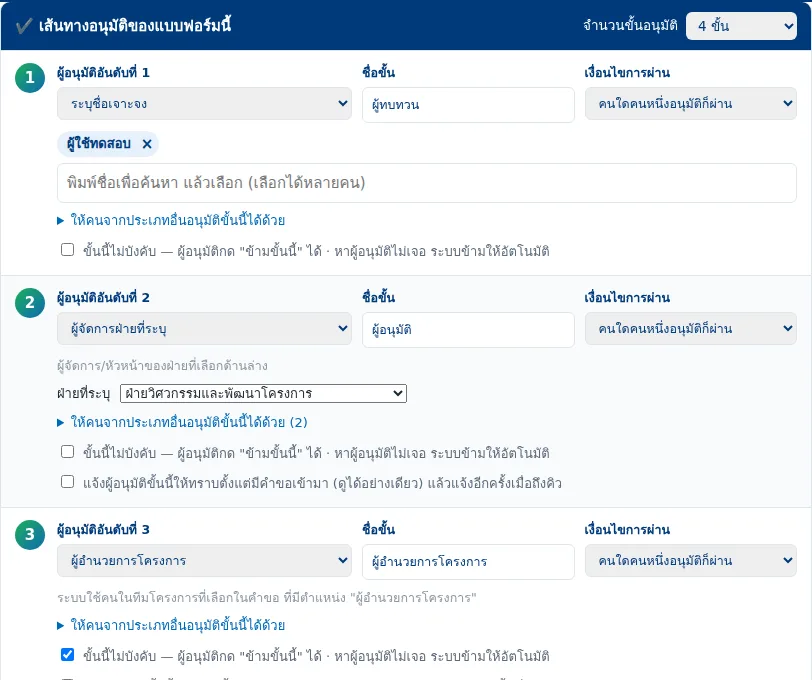
| ตัวเลือก | ใช้ทำอะไร |
|---|---|
| ผู้อนุมัติ: ทุกคนในฝ่ายที่ระบุ | คนในฝ่ายนั้นคนใดคนหนึ่งอนุมัติได้ (เช่น ผู้ทบทวนฝ่ายวิศวกรรม) |
| ผู้อนุมัติ: ผู้จัดการฝ่ายที่ระบุ | ผู้จัดการ/หัวหน้าของฝ่ายที่เลือก |
| ผู้จัดการโครงการ / ผู้อำนวยการโครงการ | ดึงจากทีมของโครงการที่ผู้ยื่นเลือกในคำขอ |
| ให้คนจากประเภทอื่นอนุมัติขั้นนี้ได้ด้วย | รวมผู้อนุมัติหลายประเภทไว้ขั้นเดียว เช่น ผู้จัดการฝ่าย หรือ ผู้จัดการโครงการ |
| ขั้นนี้ไม่บังคับ | ผู้อนุมัติกด “ข้ามขั้นนี้” ได้ · หาผู้อนุมัติไม่เจอ ระบบข้ามให้เอง |
| แจ้งตั้งแต่มีคำขอเข้ามา | ส่งให้ขั้นนี้ดูได้อย่างเดียวตั้งแต่ยื่น แล้วแจ้งอีกครั้งเมื่อถึงคิว (ใช้กับฝ่ายจัดซื้อ) |
| ใช้ขั้นนี้เฉพาะเมื่อ… 1.2 | ขั้นตามเงื่อนไข — ใช้ขั้นนี้เมื่อผู้ยื่นเลือกคำตอบที่กำหนด เช่น ประเภทงานซ่อม = คอมพิวเตอร์ (บท N13) |
| + ชื่อบุคคลที่อนุมัติขั้นนี้ได้ด้วย 1.2 | เพิ่มคนนอกเหนือจากที่ระบบหาเองตามประเภท (บท N13) |
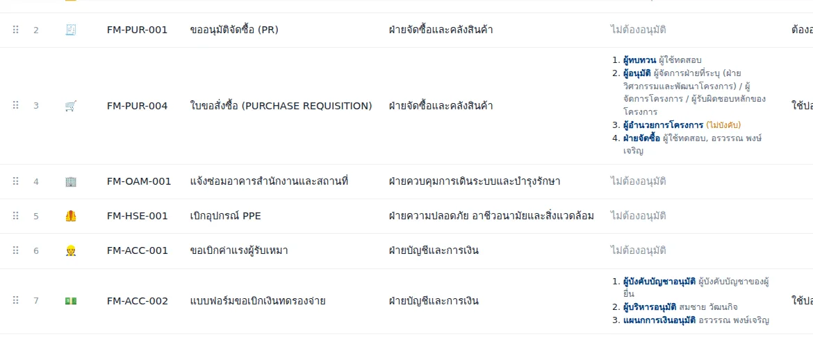
กันข้อมูลซ้ำ: เพิ่ม/นำเข้าบุคลากร โครงการ แผนก ระบบเตือนเมื่อชื่อซ้ำ (ไม่สนคำนำหน้า นาย/นาง/นางสาว) และห้ามซ้ำสำหรับอีเมลบุคลากรและรหัสโครงการ
ประวัติการแก้ไข (Audit log) บันทึกชื่อแอดมินที่แก้ไขจริง · ตรวจสุขภาพระบบ ใช้ตรวจว่า List และค่าตั้งต้นครบ
N6ติดตามสถานะ: ตัวกรอง ทะเบียนคำขอ และส่งออก Excel 1.2
หน้า ติดตามสถานะ ฝั่งซ้าย (คำขอที่ต้องดำเนินการ / คำขอทั้งหมด) แยกเป็นแถบตามแบบฟอร์ม และกรองตามสถานะได้
กรองตามสถานะ
- กดแถบชื่อแบบฟอร์มที่ต้องการ (ตัวเลขด้านหลัง = จำนวนคำขอ · วงกลมแดง = ใบที่ถึงคิวคุณ)
- แถวปุ่มใต้แถบ: ทั้งหมด · รออนุมัติ · ส่งกลับแก้ไข · อนุมัติแล้ว · เสร็จสิ้น · ไม่อนุมัติ · ยกเลิก — แสดงเฉพาะสถานะที่มีคำขอ พร้อมจำนวน
- ปุ่ม รออนุมัติ มีตัวเลขแดงบอกจำนวนที่ยังรออยู่ กดเพื่อดูเฉพาะใบที่รอ
- สถานะที่เลือกไว้จะคงอยู่เมื่อเปลี่ยนแบบฟอร์ม · กด ทั้งหมด เพื่อเลิกกรอง
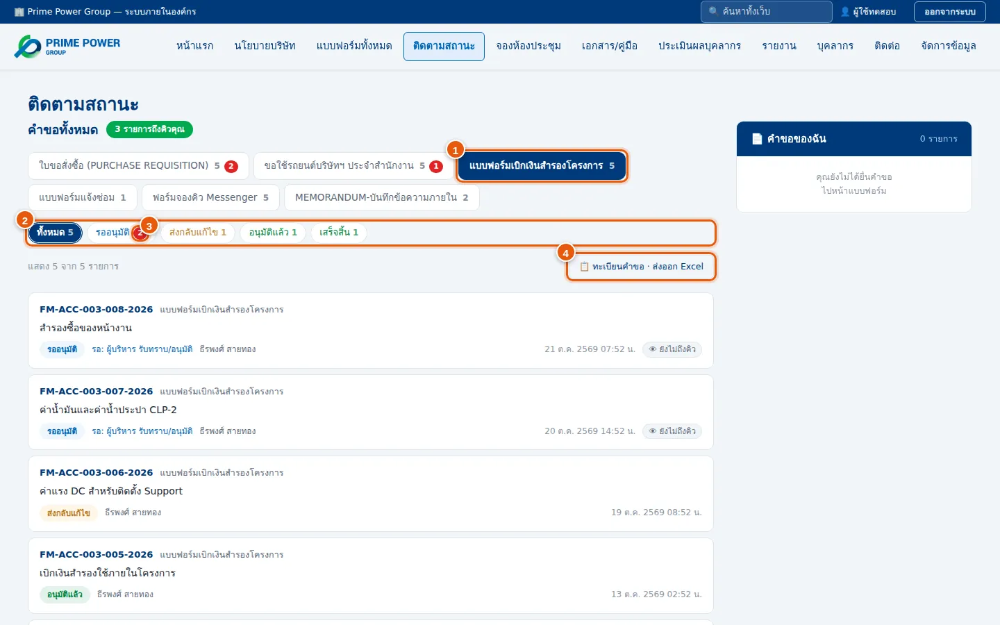
- 1แถบแบบฟอร์มที่เลือกอยู่
- 2ปุ่มกรองตามสถานะ พร้อมจำนวน
- 3ตัวเลขแดง = จำนวนที่รออนุมัติ
- 4ทะเบียนคำขอ · ส่งออก Excel ของแบบฟอร์มนี้
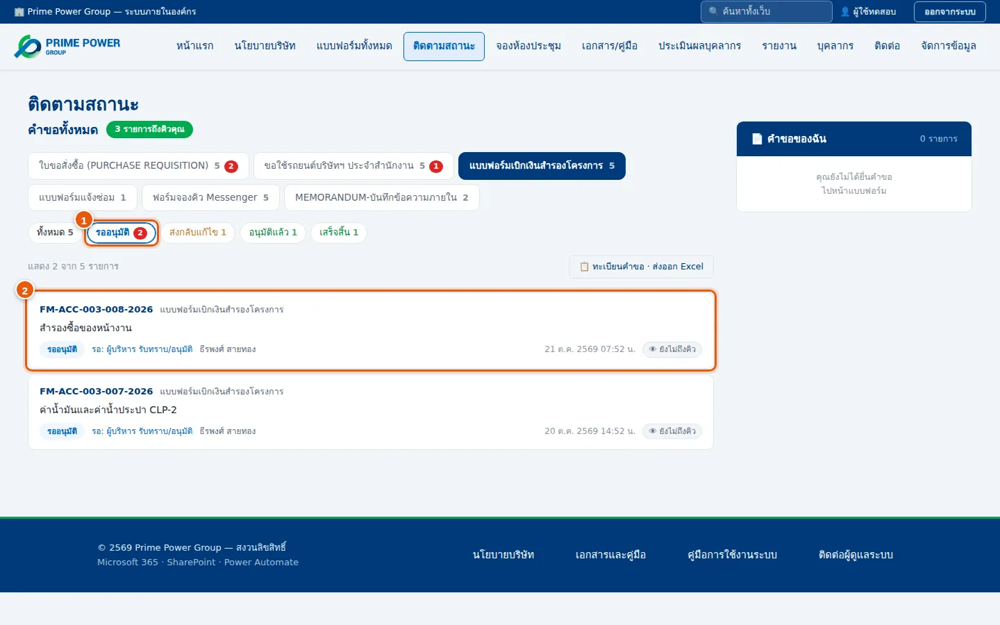
- 1ปุ่มที่เลือกอยู่
- 2รายการที่ตรงตัวกรอง
ใบขอสั่งซื้อ: กรองตามสถานะจัดซื้อ
แถบ ใบขอสั่งซื้อ มีแถว 📦 สถานะจัดซื้อ เพิ่ม: เบิก Store · รับ PR · รับใบเสนอราคา · ออก PO แล้ว · ส่ง Sup แล้ว · ส่งของแล้ว · Cancel ใช้ร่วมกับตัวกรองสถานะคำขอได้ เช่น “รออนุมัติ” + “รับ PR” · ปุ่ม 📋 ทะเบียนใบขอสั่งซื้อ (PR) อยู่ในแถบนี้
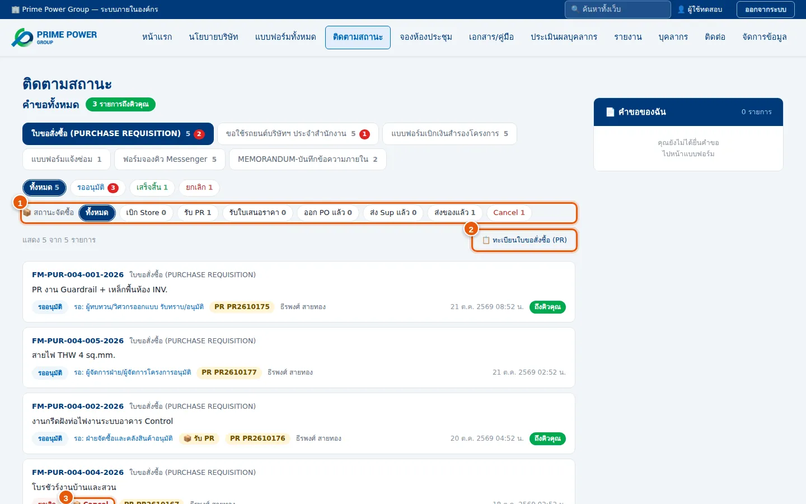
- 1ตัวกรองสถานะจัดซื้อ
- 2ทะเบียนใบขอสั่งซื้อ (PR) — เห็นเฉพาะแอดมิน ผู้บริหาร และฝ่ายจัดซื้อฯ
- 3สถานะ “ยกเลิก” และ “📦 Cancel” แสดงเป็นสีแดง
ทะเบียนคำขอของแต่ละแบบฟอร์ม + ส่งออก Excel
- ในแถบแบบฟอร์ม กด 📋 ทะเบียนคำขอ · ส่งออก Excel
- เลือกช่วงเวลา (รายวัน / รายเดือน / รายปี / ทั้งหมด ตามวันที่ยื่น) · สถานะ · โครงการ (ถ้าฟอร์มมี) · พิมพ์ค้นหาเลขที่ ผู้ยื่น หรือเรื่อง
- ตรวจในตาราง (กดเลขที่คำขอเพื่อเปิดดู) แล้วกด ⬇ ส่งออก Excel
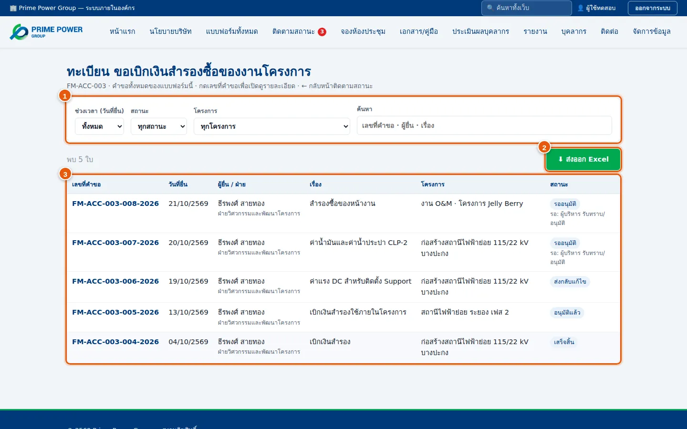
- 1ตัวกรองช่วงเวลา สถานะ โครงการ และค้นหา
- 2ส่งออก Excel ตามตัวกรอง
- 3ตารางสรุปคำขอ
| ไฟล์ Excel | รายละเอียด |
|---|---|
| หนึ่งแถว | หนึ่งคำขอ |
| คอลัมน์ระบบ | เลขที่คำขอ · วันที่ยื่น · ผู้ยื่น · ฝ่าย · สถานะ · รอลำดับ |
| คอลัมน์ฟอร์ม | ทุกช่องในแบบฟอร์ม — วันที่/ตัวเลขเป็นค่าจริงใน Excel (กรองและรวมยอดได้) · ตารางรายการรวมในช่องเดียว ขึ้นบรรทัดใหม่ต่อรายการ · ไฟล์แนบแสดงชื่อไฟล์ |
| ชื่อไฟล์ | รหัสฟอร์ม_Register_ช่วงเวลา.xlsx เช่น FM-ACC-003_Register_2026-10.xlsx |
ใครเห็นอะไรในทะเบียน: แอดมินและผู้บริหารเห็นทุกใบ · ฝ่ายที่ติดตามฟอร์มนั้น (ดูหัวข้อถัดไป) เห็นทุกใบ · คนอื่นเห็นเฉพาะใบที่ตัวเองยื่นหรืออยู่ในเส้นทางอนุมัติ · ทะเบียนอ่านคำขอย้อนหลังทั้งหมด ไม่จำกัด 6 เดือน
ฝ่ายบัญชีและการเงิน: ติดตามคำขอเบิกเงินทุกใบ
บุคลากรในฝ่ายบัญชีและการเงิน (ตามช่องฝ่ายในทะเบียนบุคลากร) เห็นคำขอทุกใบของ 3 แบบฟอร์ม: ขอเบิกเงินทดรองจ่าย (FM-ACC-002) · เบิกเงินสำรองโครงการ (FM-ACC-003) · ขอเบิกค่าแรงผู้รับเหมา (FM-ACC-004)
- ใบที่อยู่ในเส้นทางอนุมัติของคุณ — อนุมัติได้ตามปกติเมื่อถึงคิว
- ใบอื่น — ดูได้อย่างเดียว ขึ้นข้อความ “👁 ดูได้อย่างเดียว · ติดตามสถานะตามฝ่าย”
ไม่เห็นคำขอที่ต้องอนุมัติ และมีแถบสีส้ม “ไม่พบอีเมลที่คุณใช้ล็อกอินในทะเบียนบุคลากร” = อีเมลในทะเบียนไม่ตรงกับอีเมลที่ใช้ล็อกอิน ระบบจึงไม่รู้ว่าคุณเป็นผู้อนุมัติ — ส่งอีเมลที่แสดงในแถบนั้นให้ผู้ดูแลแก้ในหน้าบุคลากร
N7ใบขอสั่งซื้อ: เลข PR อัตโนมัติ ทะเบียน PR และลายเซ็น 1.2
เลข PR อัตโนมัติ
ทุกใบขอสั่งซื้อได้เลข PR ทันทีที่ผู้ยื่นกด ส่งคำขอ — เห็นในหน้าส่งสำเร็จ หน้าคำขอ ทะเบียน PR ไฟล์ Excel และใบ PR ที่พิมพ์
| ส่วนของเลข | ความหมาย (ตัวอย่าง PR2610175) |
|---|---|
| PR | ใบขอสั่งซื้อ |
| 26 | ปี ค.ศ. 2 หลัก (2026) |
| 10 | เดือน (ตุลาคม) |
| 175 | ลำดับในเดือน — ขึ้นเดือนใหม่เริ่ม 001 เช่น พฤศจิกายน = PR2611001 |
- วันที่ออก PR = วันที่ยื่น · ฝ่ายจัดซื้อแก้เลขและวันที่ได้ในกล่องอัปเดตสถานะ (ระบบตรวจไม่ให้ซ้ำกับใบอื่น)
- ยื่นพร้อมกันแล้วได้เลขเดียวกัน ระบบตรวจหลังบันทึกแล้วขยับใบที่ยื่นทีหลังเป็นเลขถัดไปเอง
- ถูกส่งกลับแก้ไขแล้วยื่นใหม่ เลข PR เดิมยังอยู่
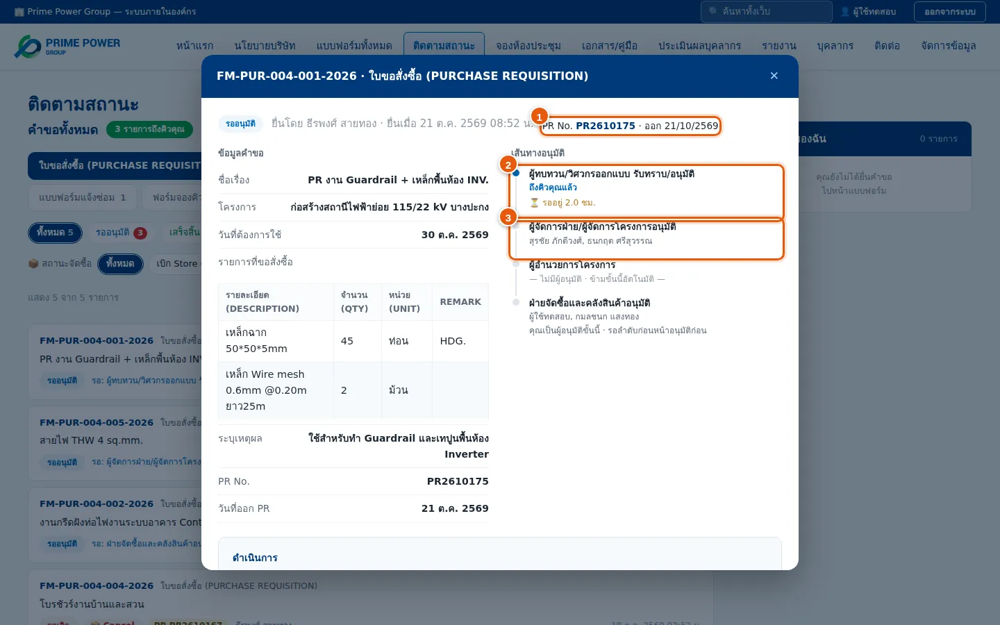
- 1เลข PR และวันที่ออก PR
- 2ขั้นผู้ทบทวน — ไม่แสดงรายชื่อ (ชื่อขึ้นเมื่อมีคนกดแล้ว)
- 3ขั้นอื่นแสดงชื่อผู้มีสิทธิ์อนุมัติ
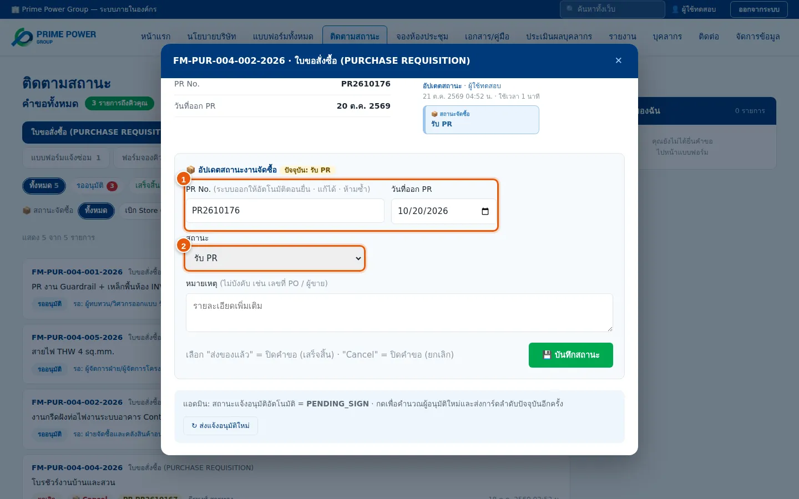
- 1เลข PR / วันที่ออก PR ที่ระบบออกให้ — แก้ได้
- 2เลือกสถานะจัดซื้อ
ทะเบียนใบขอสั่งซื้อ (PR)
เมนู ติดตามสถานะ → แถบใบขอสั่งซื้อ → 📋 ทะเบียนใบขอสั่งซื้อ (PR) · เห็นได้เฉพาะแอดมิน ผู้บริหาร และบุคลากรฝ่ายจัดซื้อและคลังสินค้า
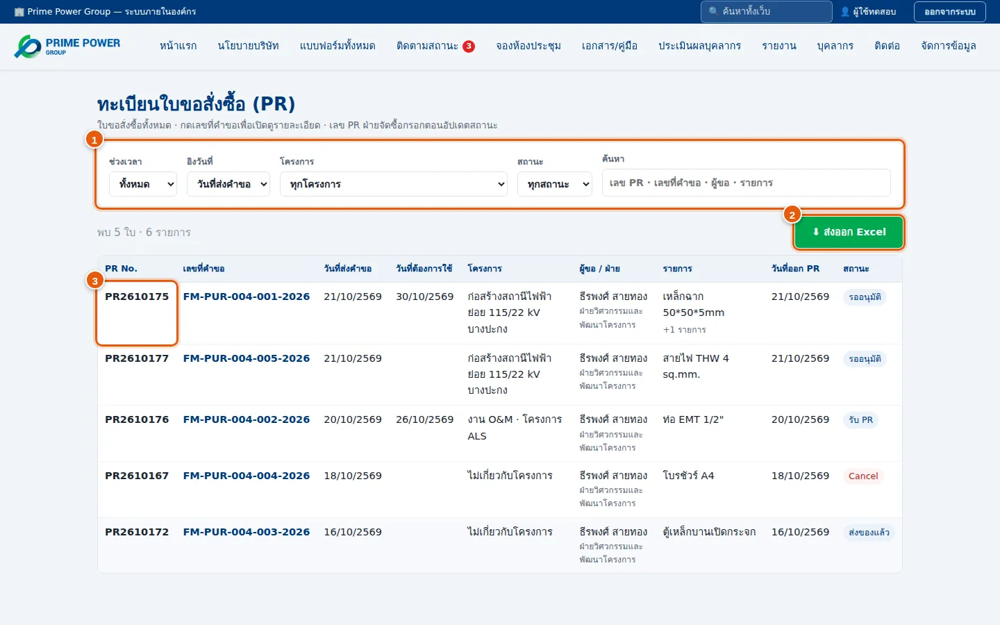
- 1กรองรายวัน/เดือน/ปี (อิงวันที่ส่งคำขอหรือวันที่ออก PR) · โครงการ · สถานะ · ค้นหาเลข PR/ผู้ขอ/รายการ
- 2ส่งออก Excel — หนึ่งแถวต่อหนึ่งรายการสินค้า
- 3เลข PR ของแต่ละใบ
ต้องเซ็นก่อนอนุมัติทุกครั้ง
- ผู้อนุมัติจะได้อีเมลและข้อความ Teams “ถึงคิวคุณแล้ว — กรุณาเซ็นและอนุมัติ” พร้อมลิงก์ เปิดคำขอเพื่อเซ็นและอนุมัติ (ไม่มีปุ่มอนุมัติในการ์ด)
- กดลิงก์ → เซ็นในกรอบ ✍ ลายเซ็นผู้อนุมัติ * (ลากเมาส์/นิ้ว หรืออัปโหลดรูป)
- กด ✓ อนุมัติ — ถ้ายังไม่เซ็น หรืออัปโหลดลายเซ็นไม่สำเร็จ ระบบไม่บันทึกและแจ้งให้เซ็นใหม่
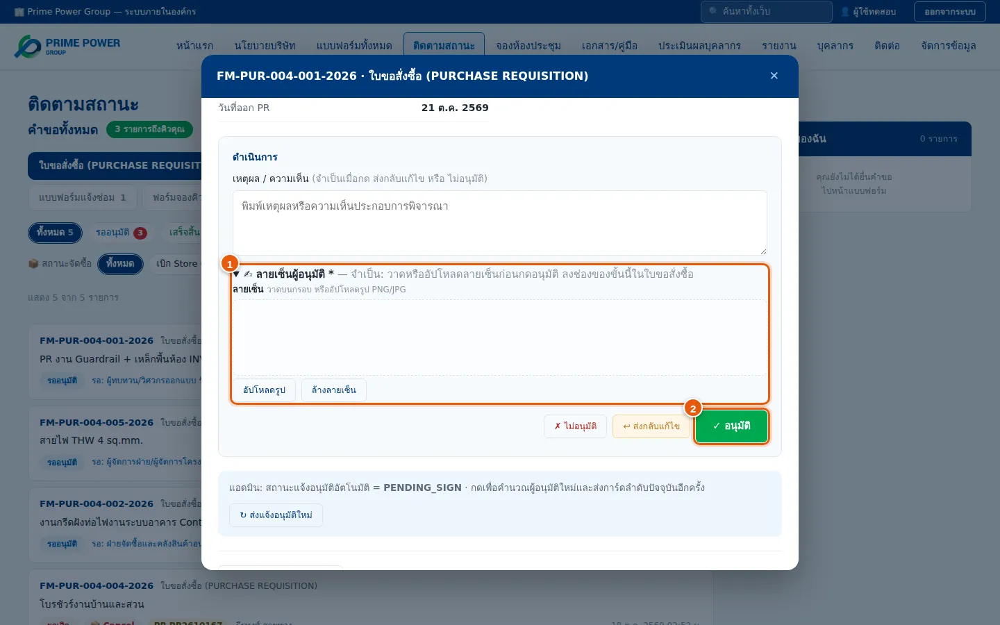
- 1กรอบลายเซ็นผู้อนุมัติ (จำเป็น)
- 2ปุ่มอนุมัติ
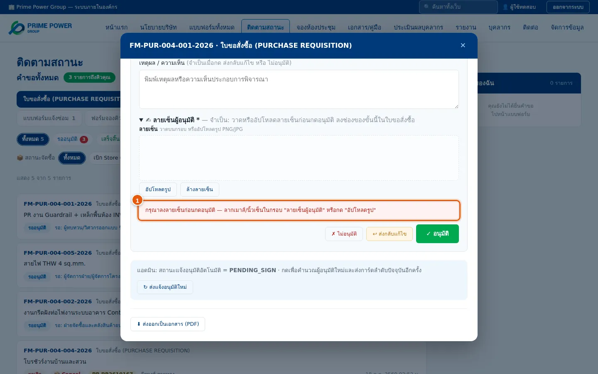
- 1ข้อความเตือน — ยังไม่ถูกบันทึก
- 1ป้าย “⚠ ไม่มีลายเซ็น” (เช่น กดจากการ์ด Teams รุ่นเก่า)
ใบ PR ที่พิมพ์ใช้ลายเซ็นที่เซ็นตอนอนุมัติ ถ้าขั้นไหนไม่มี จะใช้ลายเซ็นในทะเบียนบุคลากรแทน (เฉพาะเมื่อชื่อผู้กดตรงกับชื่อในทะเบียน)
N8งาน O&M 1.2
ใช้ใน 4 แบบฟอร์ม: ขอเบิกค่าแรงผู้รับเหมา · ขอเบิกเงินทดรองจ่าย · เบิกเงินสำรองโครงการ · ใบขอสั่งซื้อ (PR)
- ช่อง โครงการ เลือก งาน O&M
- ช่อง โครงการ O&M * จะขึ้นมา — เลือกจากรายการที่แบ่งกลุ่ม WHA Group (9 โครงการ) และ Gulf Solar (13 โครงการ)
- ไม่มีในรายการ → เลือก ➕ อื่นๆ — เพิ่มโครงการที่ไม่มีในรายการ แล้วพิมพ์ชื่อโครงการ
- 1ช่องโครงการ = งาน O&M
- 2เลือกโครงการ O&M
- 1พิมพ์ชื่อโครงการเอง
- เลือกงาน O&M แต่ไม่เลือกโครงการ O&M จะส่งไม่ได้
- ในหน้าคำขอ การ์ดแจ้งเตือน ใบ PR ทะเบียน และ Excel แสดงเป็น “งาน O&M · โครงการ ALS”
- ผู้อนุมัติขั้นที่อ้างอิงโครงการ = ผู้บังคับบัญชาของผู้ยื่น (เหมือนงานทั่วไป) เว้นแต่ผู้ดูแลสร้างโครงการชื่อ “งาน O&M” ในทะเบียนโครงการและกำหนดผู้รับผิดชอบ
- ชื่อที่พิมพ์เองไม่ถูกเพิ่มเข้ารายการถาวร — ผู้ดูแลเพิ่มได้ที่ตั้งค่าระบบ
OMSites(บท N13)
N9จองคิว Messenger 1.2
หน้าแรก: คิว Messenger วันนี้
- 1ป้ายสถานะสีของแต่ละคิว
- 2ดูปฏิทินคิวทั้งเดือน
- แสดงคิวของวันนี้ทุกคำขอ เรียงตามเวลา พร้อมสถานะล่าสุด
- ใบที่ยกเลิก/ไม่อนุมัติไม่แสดง
- วันที่นับตามเวลาไทย (คิววันที่ 20 ขึ้นวันที่ 20 ไม่เลื่อน)
| สี | สถานะ |
|---|---|
| 🟨 เหลือง | รออนุมัติ |
| 🟧 ส้ม | ส่งกลับแก้ไข |
| 🟩 เขียว | อนุมัติแล้ว / เสร็จสิ้น |
| 🟪 ม่วง | เวลาชนกับคิวอื่น (จองทับ) |
| ขีดฆ่า | ยกเลิก / ไม่อนุมัติ (ในปฏิทิน ไม่นับเป็นคิว) |
เวลาชนกับคิวเดิม: จองทับได้หลังยืนยัน
- เลือกวันและเวลาในฟอร์ม ถ้าชนกับคิวเดิม จะขึ้นกล่องสีส้มทันที บอกว่าชนกับใคร เรื่องอะไร ที่ไหน เลขที่คำขอ และช่วงเวลาที่ยังว่างของวันนั้น
- เปลี่ยนเวลาได้ หรือกดส่งต่อ → ระบบถาม “ยืนยันจองทับช่วงเวลานี้หรือไม่?”
- ตกลง = ส่งคำขอ · ทั้งคิวเดิมและคิวใหม่จะเป็นสีม่วงในปฏิทิน
- 1ชนกับใคร เรื่องอะไร สถานที่ เลขที่คำขอ และช่วงเวลาที่ยังว่าง
- 1วันที่มีคิวชน (สีม่วง)
- 2ป้าย “⚠ เวลาชนกัน”
ปฏิทินเต็มจอและบันทึกเป็นภาพ
- ⛶ ขยายเต็มจอ — เห็นทุกคิวของเดือน พร้อมคำอธิบายสี กด Esc เพื่อปิด
- ⬇ PNG แนวตั้ง (1080×1920) — ส่งในกลุ่มแชท
- ⬇ PNG แนวนอน (1920×1080) — นำเสนอ/จอประชุม (ปฏิทินซ้าย รายการขวา)
- ใช้ได้ทั้งตารางคิว Messenger และตารางการใช้รถยนต์บริษัทฯ
- 1คำอธิบายสี
- 2บันทึก PNG แนวตั้ง
- 3บันทึก PNG แนวนอน
N10จองรถยนต์บริษัทฯ (FM-ADM-002) 1.2
แบบฟอร์ม ขอใช้รถยนต์บริษัทฯ ประจำสำนักงาน จองรถส่วนกลางเป็นช่วงวัน-เวลา ผู้ดูแลรถ (ฝ่ายประสานงานและอำนวยการ) อนุมัติและเลือกทะเบียนรถให้
ผู้ยื่น: จองรถ
- เมนู แบบฟอร์มทั้งหมด → ขอใช้รถยนต์บริษัทฯ ประจำสำนักงาน — ดูปฏิทินรถด้านขวาก่อนว่าวันนั้นมีใครจองแล้ว
- ชื่อผู้ใช้รถ (จองให้คนอื่นได้) · วันที่เริ่ม – วันที่สิ้นสุด (ข้ามวันได้) · เวลาเริ่ม – เวลาสิ้นสุด (ทุกครึ่งชั่วโมง)
- สถานที่ไปทำงาน — กด 🗺 เปิดในแผนที่ เพื่อเปิด Google Maps ตรวจสถานที่ หรือวางลิงก์แผนที่ได้
- เหตุผลการใช้รถ แล้วกด ส่งคำขอ
- 1วันที่เริ่ม (วันที่สิ้นสุดตั้งตามให้เอง)
- 2เวลา
- 3ปฏิทินรถ — คำขอขึ้นตั้งแต่ยื่น
- 1พิมพ์สถานที่
- 2เปิดแผนที่ Google Maps
รถเต็ม: ถ้าช่วงเวลาที่ขอมีคำขอค้าง/อนุมัติแล้วครบจำนวนรถ (ค่าเริ่มต้น 3 คัน) ระบบไม่ให้ส่ง แสดงรายการที่จองไว้ และให้ติดต่อผู้ดูแลรถโดยตรงหรือเลือกเวลาอื่น — คำขอที่รออนุมัติก็นับด้วย
ผู้ดูแลรถ: อนุมัติและเลือกทะเบียนรถ
- เปิดคำขอ → เลือก ทะเบียนรถที่ใช้ (หรือ “อื่น ๆ” แล้วพิมพ์ทะเบียน)
- กด ✓ อนุมัติ — ถ้ารถคันนั้นถูกจองช่วงเวลาทับกัน ระบบถามยืนยันก่อน
- 1ทะเบียนรถ (จำเป็น)
- 2อนุมัติ
หลังอนุมัติ: เปลี่ยนรถ / ยกเลิก / คืนรถ
- 1ช่วงเวลา ทะเบียนรถ และแผนที่
- 1🔑 คืนรถ — ผู้ยื่น หรือผู้ดูแล/ผู้อนุมัติกดแทนได้ · ใส่หมายเหตุ เช่น เลขไมล์ น้ำมันคงเหลือ
- 2🚗 จัดการการจอง (ผู้อนุมัติ/แอดมิน) — เปลี่ยนรถ หรือยกเลิกการจองได้ทุกเมื่อ
| การกระทำ | ผลลัพธ์ |
|---|---|
| คืนรถ | บันทึกวันเวลาที่คืน ปิดคำขอเป็น เสร็จสิ้น · รถว่างให้คนอื่นจองทันที · ปฏิทินแสดงเป็นสีเทา “คืนรถแล้ว” |
| เปลี่ยนรถ | เปลี่ยนทะเบียน บันทึกในเส้นทางอนุมัติ |
| ยกเลิกการจอง | ปิดคำขอเป็นยกเลิก (ต้องใส่เหตุผล) · ไม่นับในปฏิทินและการตรวจรถเต็ม |
N11แบบฟอร์มแจ้งซ่อม (FM-ADM-007) 1.2
แจ้งซ่อม เปลี่ยนอะไหล่ ตรวจเช็ค หรือติดตั้ง — ระบบส่งให้ฝ่ายที่รับผิดชอบตามประเภทงานซ่อมที่เลือก
- 1ประเภทงานซ่อม — เลือกแล้วระบบรู้ว่าจะส่งให้ฝ่ายไหน
| ประเภทงานซ่อม | ส่งไปที่ |
|---|---|
| คอมพิวเตอร์/อุปกรณ์ IT | ฝ่ายประสานงานและอำนวยการ (IT) |
| อุปกรณ์ เครื่องมือวัด/เครื่องมือช่าง | ฝ่ายจัดซื้อและคลังสินค้า |
| อาคาร-สถานที่ | ฝ่ายควบคุมการเดินระบบและบำรุงรักษา |
| อื่นๆ | ฝ่ายประสานงานและอำนวยการ |
หลังฝ่ายที่รับเรื่องอนุมัติ ทุกประเภทส่งต่อให้ผู้บริหารลงนาม: กานต์ธิดา ใสสะอาด (รองกรรมการผู้จัดการด้านการเงิน) → ไพรัช เขียนเขว้า (กรรมการผู้จัดการ) · เอกสาร PDF มีช่องลงนามของทั้งสองท่าน
- 1ฝ่ายที่รับผิดชอบประเภทงานซ่อมนี้
- 2รองกรรมการผู้จัดการด้านการเงิน
- 3กรรมการผู้จัดการ
รูปภาพความเสียหายที่แนบ จะแสดงเป็นภาพขนาดพอดีในเอกสาร PDF ที่ส่งออก (ไม่ใช่แค่ชื่อไฟล์)
N12เส้นทางอนุมัติในหน้าคำขอ: อ่านให้เป็น 1.2
| ที่เห็นในเส้นทางอนุมัติ | ความหมาย |
|---|---|
| รายชื่อใต้ชื่อขั้น | ผู้มีสิทธิ์อนุมัติขั้นนั้น · ขั้นผู้ทบทวน (ส่งให้ทั้งฝ่าย) ไม่แสดงรายชื่อ — ชื่อขึ้นเมื่อมีคนกดแล้ว |
| ถึงคิวคุณแล้ว | คุณเป็นผู้อนุมัติของขั้นปัจจุบัน — มีปุ่มอนุมัติด้านล่าง |
| คุณเป็นผู้อนุมัติขั้นนี้ · รอลำดับก่อนหน้า | ยังไม่ถึงคิว (ดูได้อย่างเดียว) ระบบแจ้งอีกครั้งเมื่อถึงคิว |
| ต้องอนุมัติครบทุกคน · อนุมัติแล้ว 1/3 คน · รออีก 2 คน | ขั้นนี้ตั้งให้ทุกคนต้องอนุมัติ — ยังไม่ผ่านจนกว่าจะครบ |
| ⚠ ลำดับนี้อนุมัติแล้ว แต่ระบบยังไม่เลื่อน | ค้างผิดปกติ — แจ้งแอดมินกด ↻ ส่งแจ้งอนุมัติใหม่ ระบบจะเลื่อนไปลำดับถัดไปให้ |
| — ไม่มีผู้อนุมัติ · ข้ามขั้นนี้อัตโนมัติ — | ขั้นไม่บังคับที่หาผู้อนุมัติไม่เจอ (เช่น โครงการไม่มีผู้อำนวยการ) ระบบข้ามให้ |
| ⚠ ไม่มีลายเซ็น (ใบขอสั่งซื้อ) | ขั้นนั้นอนุมัติโดยไม่ได้เซ็น (บท N7) |
ถูกส่งกลับแก้ไข: ไฟล์แนบเดิมยังอยู่
กด ✎ แก้ไขและยื่นใหม่ ไฟล์และรูปที่เคยแนบจะขึ้นในฟอร์มให้แล้ว ลบหรือเพิ่มได้ ไม่ต้องแนบใหม่ทั้งหมด · ข้อมูลที่ระบบ/ผู้อนุมัติเติม (เลข PR, ทะเบียนรถ) ไม่หาย
N13สำหรับผู้ดูแลระบบ: เครื่องมือใหม่ 1.2
ขั้นอนุมัติตามเงื่อนไข และเพิ่มชื่อผู้อนุมัติต่อขั้น
จัดการข้อมูล → แบบฟอร์ม → ✎ แก้ไข → เส้นทางอนุมัติ (รองรับสูงสุด 8 ขั้น)
- 1เส้นทางของแบบฟอร์มแจ้งซ่อม — ขั้นตามเงื่อนไขและผู้ลงนาม
- 1“ใช้ขั้นนี้เฉพาะเมื่อ…” เลือกช่องในฟอร์ม (เช่น ประเภทงานซ่อม) แล้วติ๊กคำตอบที่ใช้ขั้นนี้ — ไม่ตรง = ข้ามขั้นนี้
- 1ชื่อผู้อนุมัติของขั้น — ขั้นประเภทอื่นมีช่อง “+ ชื่อบุคคลที่อนุมัติขั้นนี้ได้ด้วย” เพิ่มคนนอกเหนือจากที่ระบบหาเอง
ตรวจสุขภาพระบบ: คำขอค้าง
- 1รายละเอียดของแต่ละปัญหา — การ์ด “หาผู้อนุมัติไม่ได้” บอกเลขที่ ผู้ยื่น ลำดับที่ค้าง และสาเหตุ
- หาผู้อนุมัติไม่ได้: แสดงทีละใบ ✓ = แก้ได้แล้ว · ✗ = ต้องแก้ข้อมูลก่อน (เช่น ผู้ยื่นไม่มีผู้บังคับบัญชา ผู้อนุมัติไม่มีอีเมล)
- อนุมัติแล้วแต่ไม่เลื่อนไปลำดับถัดไป: ตรวจพบอัตโนมัติ
- ปุ่ม ↻ ส่งแจ้งอนุมัติใหม่ทุกใบที่แก้ได้ เลื่อนลำดับและส่งการ์ดให้ทุกใบในครั้งเดียว
- ไม่เตือนเรื่อง “ไม่มีผู้บังคับบัญชา” กับประธาน/กรรมการบริษัท · ไม่เตือนเรื่องเส้นทางอนุมัติกับแบบฟอร์มที่เป็นลิงก์ภายนอก
ตรวจสิทธิ์เข้าถึงเว็บ (#/access)
ตั้งค่าระบบที่เพิ่มใหม่
| Title | ใช้ทำอะไร | ตัวอย่าง Value |
|---|---|---|
| CarPlates | รายชื่อรถบริษัท (คั่นด้วยจุลภาค) · จำนวนคัน = จำนวนการจองซ้อนกันสูงสุด | 1 ขร 5775 (Haval), 6 ขล 5784 (Toyota Yaris) |
| PRNoStart | เลข PR เริ่มต้นของเดือน (ใช้เมื่อต้องตั้งเลขใหม่) | PR2611050 |
| OMSites | รายการโครงการ O&M บรรทัดละรายการ กลุ่ม|ชื่อโครงการ — ตั้งแล้วจะแทนรายการเดิมทั้งหมด | WHA Group|โครงการ ALS |
Power Automate: ใบขอสั่งซื้อได้ PAState = PENDING_SIGN — โฟลว์กล่อง 5.2 needWebSign ส่งอีเมล/Teams ให้เข้าเว็บไปเซ็น แทนการ์ดที่มีปุ่มอนุมัติ (ดูไฟล์ docs/power-automate-v2.md)
คอลัมน์ Choice: ถ้าบันทึกแล้วขึ้น “ค่า … ยังไม่มีในตัวเลือก” ให้เพิ่มค่านั้นในคอลัมน์ Choice ของ List ใน SharePoint (เช่น DocType ต้องมี คู่มือ / เอกสาร ISO / ไฟล์ดาวน์โหลด)
รหัสฟอร์มว่าง: คำขอที่ช่อง FormCode ว่าง ระบบดูรหัสจากเลขที่เอกสารแทน (ปฏิทินรถ คิว Messenger และการหาผู้อนุมัติทำงานได้ตามปกติ)
11จองห้องประชุม
ดูตารางการใช้ห้อง แล้วจองจากหน้าเว็บ ระบบสร้างนัดหมายในปฏิทิน Outlook ของคุณและเชิญห้องให้อัตโนมัติ
สถานการณ์
คุณชัยวัฒน์ต้องการประชุมติดตามงานโครงการบางปะกงกับหัวหน้าและเพื่อนร่วมทีม วันที่ 8 ต.ค. เวลา 13:30–15:00 น. โดยมีผู้เข้าร่วมจากหน้างานผ่าน Teams
- เมนู จองห้องประชุม → เลือกห้อง (ดูจำนวนที่นั่งและชั้น)
- ดูตารางด้านล่างว่าเวลาที่ต้องการว่างหรือไม่ (ถ้าตารางไม่ขึ้น กด ↗ เปิดปฏิทินเต็มจอ)
- กรอก หัวข้อการประชุม · วันที่ · เวลา เริ่ม และ ถึง
- ผู้เข้าร่วม ใส่อีเมลคั่นด้วยเครื่องหมายจุลภาค (,) · รายละเอียดเพิ่มเติม (ไม่บังคับ)
- กด 📅 จองห้อง — ครั้งแรกอาจมีหน้าต่าง Microsoft ขออนุญาตเข้าถึงปฏิทิน ให้กดยอมรับ
- 1เลือกห้อง
- 2หัวข้อการประชุม
- 3วันที่
- 4เวลาเริ่ม–สิ้นสุด
- 5อีเมลผู้เข้าร่วม
- 6ปุ่มจองห้อง
จะจองผ่าน Outlook แบบเดิมก็ได้ กดปุ่ม ↗ จองผ่าน Outlook · ผู้เข้าร่วมจะได้รับคำเชิญใน Outlook/Teams เหมือนนัดประชุมปกติ ยกเลิก/เลื่อนนัดทำใน Outlook
12เอกสาร / คู่มือ
คู่มือปฏิบัติงาน เอกสาร ISO และไฟล์ต้นแบบสำหรับดาวน์โหลด แยกตามฝ่ายเจ้าของเอกสาร
- 1แท็บ คู่มือ · เอกสาร ISO · ไฟล์ดาวน์โหลด (ตัวเลขคือจำนวนรายการ)
- 2กดชื่อเอกสารหรือ “เปิดอ่าน” เพื่อดูเนื้อหาและไฟล์แนบ
นโยบายบริษัทอยู่ที่เมนู นโยบายบริษัท แยกจากหน้านี้ · ถ้าหาเอกสารไม่เจอ ให้ถามฝ่ายเจ้าของเอกสาร
13ประเมินผลบุคลากร
ใช้ประเมินพนักงานทดลองงานและประเมินประจำปี แทนแบบฟอร์มกระดาษ ทุกคนลงนามในระบบ
ลำดับขั้นของใบประเมิน
ขั้นที่ 2 และ 3 ทำพร้อมกันได้ · บางรอบ HR อาจเปิดให้พนักงานประเมินตนเองก่อนหัวหน้า
หัวหน้าประเมินลูกทีม
สถานการณ์
คุณชัยวัฒน์ทำงานครบ 60 วัน ฝ่ายบุคคลเปิดรอบ “ทดลองงาน รอบที่ 1/2569” คุณธีรพงศ์ในฐานะหัวหน้าต้องประเมิน
- เมนู ประเมินผลบุคลากร (มีตัวเลขแดง) → แท็บ ทีมของฉัน
- กด ประเมิน ที่ชื่อลูกทีม
- ตรวจข้อมูลด้านบน: สถานะ ขั้นตอน วันเริ่มงาน วันครบกำหนดแต่ละครั้ง และสถิติการมาทำงาน (มาสาย ขาดงาน ลา)
- ให้คะแนนทุกข้อ 1–10 (10 = ดีมาก) — มีช่องความเห็นรายข้อ (ไม่บังคับ) · กดแถบ 📋 เกณฑ์การให้คะแนน ทางซ้ายของจอเพื่อดูคำอธิบายแต่ละระดับ
- เลื่อนลงไปส่วนลงนาม กรอกความเห็นและเซ็นในช่อง “ผู้ประเมิน”
- กด บันทึกและส่งให้พนักงานรับทราบ / ฝ่ายบุคคล
- 1แท็บ ทีมของฉัน (ตัวเลข = ใบที่รอคุณ)
- 2ตัวเลขแดงบนเมนู
- 1ปุ่มประเมิน
- 1สถานะ คะแนนรวม และเกรด (คำนวณให้อัตโนมัติ)
- 2ขั้นตอนของใบประเมิน — วงกลมน้ำเงิน = ขั้นปัจจุบัน
- 3เลือกคะแนนแต่ละข้อ
- 4ลายเซ็นผู้ประเมิน
- 5บันทึกและส่ง
เมื่อกดส่งแล้ว คะแนนจะถูกล็อก แก้ไขไม่ได้ ถ้าต้องการแก้ ให้ฝ่ายบุคคลส่งกลับมา
พนักงานรับทราบและลงนาม
- เมนู ประเมินผลบุคลากร → แท็บ การประเมินของฉัน — เห็นคะแนนและเกรดของตนเอง
- กด ✍ เปิดใบเพื่อลงนามรับทราบ
- อ่านผลการประเมินทั้งหมด · กรอก ความเห็นของฉัน (ถ้ามี) · เซ็นในกรอบ หรืออัปโหลดรูปลายเซ็น
- กด ✓ ลงนามรับทราบ
- 1เปิดใบเพื่อลงนามรับทราบ
- 2ขั้นตอนของใบประเมิน
- 1กล่องลงนามรับทราบ — คะแนน เกรด ความเห็น และลายเซ็น
- 2ลงนามรับทราบ
การลงนามรับทราบไม่ได้แปลว่าเห็นด้วยทุกข้อ — ถ้าไม่เห็นด้วย เขียนในช่องความเห็นได้ ฝ่ายบุคคลและผู้บริหารจะเห็น
14บุคลากรและแผนผังองค์กร
ค้นหาเพื่อนร่วมงาน เบอร์ภายใน อีเมล และดูโครงสร้างองค์กร
ค้นหาบุคลากร
- เมนู บุคลากร → พิมพ์ชื่อจริง ชื่อเล่น ชื่ออังกฤษ ตำแหน่ง หรือชื่อฝ่าย/แผนก
- กดการ์ดเพื่อดูข้อมูลเต็มและรูปใหญ่ · กดอีเมลเพื่อเปิดโปรแกรมส่งเมล · กด 📋 เพื่อคัดลอกอีเมล
- 1แท็บ รายชื่อบุคลากร / แผนผังองค์กร
- 2ช่องค้นหา
- 3การ์ดบุคลากร — ชื่อ ชื่อเล่น ตำแหน่ง อีเมล เบอร์ภายใน
แผนผังองค์กร
แท็บ 🏢 แผนผังองค์กร แสดงผังตามฉบับประกาศของบริษัท กดกล่องฝ่ายหรือแผนกเพื่อดูรายชื่อคนในหน่วยนั้น กดกล่องตำแหน่งผู้บริหารเพื่อดูข้อมูลผู้ดำรงตำแหน่ง บนมือถือเลื่อนซ้าย–ขวาในกรอบเพื่อดูทั้งผัง
- 1แท็บแผนผังองค์กร
- 2กดกล่องฝ่าย/แผนก
ถ้าข้อมูลของคุณ (ตำแหน่ง เบอร์ภายใน รูป) ไม่ถูกต้อง แจ้งฝ่ายทรัพยากรบุคคลให้แก้ไข
15ติดต่อ / กล่องความคิดเห็น
- 1สมุดโทรศัพท์ภายในทุกหน่วยงาน — โทรเข้าเบอร์กลางแล้วกดเบอร์ต่อ
- 2ผู้ดูแลระบบ — ติดต่อเมื่อใช้งานไม่ได้
ส่งความคิดเห็นถึงฝ่ายบริหาร
- เลือก เรื่องที่ต้องการเสนอ
- เล่า รายละเอียด: สถานการณ์ที่เจอ และสิ่งที่อยากให้เปลี่ยน
- ถ้าไม่ต้องการระบุชื่อ ติ๊ก ไม่ต้องการระบุชื่อผู้เสนอ
- กด ส่งความคิดเห็น
- 3เรื่องที่เสนอ
- 4รายละเอียด
- 5ไม่ระบุชื่อ
- 6ส่ง
16รายงาน
สำหรับหัวหน้าและผู้บริหาร ใช้ดูภาพรวมการใช้งานและจุดที่งานค้าง
17ใช้งานบนมือถือ
ทุกเมนูใช้บนมือถือได้ เหมาะกับการยื่นคำขอจากหน้างาน อนุมัติระหว่างเดินทาง หรือถ่ายรูปใบเสร็จแนบทันที
- เปิดลิงก์ระบบด้วย Safari (iPhone) หรือ Chrome (Android) แล้วเข้าสู่ระบบเหมือนบนคอม
- ติดตั้งเป็นแอป: iPhone (Safari) กดปุ่มแชร์ □↑ → “เพิ่มไปยังหน้าจอโฮม” → เพิ่ม · Android (Chrome) กด ⋮ → “ติดตั้งแอป” หรือ “เพิ่มลงในหน้าจอหลัก” — จะได้ไอคอน Intranet เปิดเต็มจอเหมือนแอป ไม่ต้องดาวน์โหลดจาก App Store
- เมนูอยู่ในปุ่ม ☰ เมนู มุมขวาบน — เลือกเมนูแล้วแถบเมนูจะปิดเอง
- ตอนแนบไฟล์ เลือก “ถ่ายรูป” เพื่อถ่ายใบเสร็จได้ทันที · ลายเซ็นใช้นิ้วเซ็นในกรอบ
- 1ปุ่มเมนู
18ปัญหาที่พบบ่อยและวิธีแก้
เข้าสู่ระบบไม่ได้ ขึ้นว่าบัญชีไม่ได้รับอนุญาต
ตรวจว่าใช้อีเมล @primepower.co.th ไม่ใช่อีเมลส่วนตัว ถ้าเป็นพนักงานใหม่ บัญชีอาจยังไม่พร้อม ติดต่อฝ่ายทรัพยากรบุคคล หรือผู้ดูแลระบบ (ต่อ 216)
หน้าเว็บไม่อัปเดต / ไม่เห็นเมนูหรือปุ่มใหม่
กด Ctrl + F5 (Mac: Cmd + Shift + R) เพื่อโหลดหน้าใหม่ทั้งหมด บนมือถือให้ปิดแท็บแล้วเปิดใหม่ หรือลากหน้าจอลงเพื่อรีเฟรช
กดส่งคำขอแล้วไม่ไป ขึ้นข้อความสีแดง
อ่านข้อความ ส่วนใหญ่คือยังไม่ได้กรอกช่องที่มี * ข้อความจะบอกว่า “ยังขาด” ช่องไหน · ถ้าขึ้นว่า SharePoint มีผู้ใช้งานหนาแน่น ให้รอ 1–2 นาทีแล้วกดส่งใหม่ ข้อมูลที่กรอกไว้ยังอยู่
คำขอค้างที่ผู้อนุมัติคนเดิมนานหลายวัน
เปิดคำขอดูเส้นทางอนุมัติ ชื่อผู้อนุมัติที่กำลังรออยู่จะแสดงพร้อมเวลาที่รอ ติดต่อผู้อนุมัติโดยตรง (ดูเบอร์ในเมนูบุคลากร) · ถ้าผู้อนุมัติลาออกหรือเปลี่ยนตำแหน่ง แจ้ง HR ให้แก้ทะเบียนบุคลากร
คำขอไปหาผู้อนุมัติผิดคน
ระบบใช้ข้อมูลในหน้าบุคลากร (หัวหน้า ฝ่าย แผนก) และเส้นทางอนุมัติของแต่ละแบบฟอร์ม แจ้ง HR หรือผู้ดูแลระบบพร้อมเลขที่คำขอ
อนุมัติใน Teams แล้ว แต่ในเว็บยังรออยู่
ปกติใช้เวลาไม่กี่นาที ถ้าเกิน 10 นาที ให้อนุมัติในเว็บแทน และแจ้งผู้ดูแลระบบพร้อมเลขที่คำขอ · ถ้าคุณอนุมัติหลายลำดับ ให้กดการ์ดใบล่าสุด (บทที่ 9)
กดอนุมัติใบขอสั่งซื้อไม่ได้ ขึ้นว่า “กรุณาลงลายเซ็นก่อนกดอนุมัติ”
ใบขอสั่งซื้อต้องเซ็นทุกขั้น เปิดกรอบ ✍ ลายเซ็นผู้อนุมัติ แล้วเซ็นหรืออัปโหลดรูปลายเซ็น จากนั้นกดอนุมัติอีกครั้ง (บทที่ N1)
ใบขอสั่งซื้อส่งไม่ได้ ช่องโครงการขึ้นสีแดง
ต้องเลือกโครงการจากรายการที่ขึ้นมา (พิมพ์เองไม่ได้) ถ้าไม่ใช่งานโครงการ เลือก “ไม่เกี่ยวกับโครงการ” · ถ้าหาโครงการไม่เจอ แจ้งผู้ดูแลระบบให้เพิ่มโครงการ
จะลา คำขอที่ต้องอนุมัติจะทำอย่างไร
แจ้ง HR ให้ตั้ง “ไม่อยู่ตั้งแต่วันที่ / ถึงวันที่ / ผู้ปฏิบัติแทน” ในทะเบียนบุคลากร คำขอใหม่ช่วงนั้นจะไปหาผู้ปฏิบัติแทนเอง (บทที่ N4)
รูปภาพ / ไฟล์แนบไม่แสดง
กดชื่อไฟล์เพื่อเปิดในแท็บใหม่ ถ้ายังเปิดไม่ได้ ตรวจว่ายังล็อกอินอยู่ หรือกด Ctrl+F5 · ถ้าเป็นทุกไฟล์ แจ้งผู้ดูแลระบบ
ลายเซ็นไม่ขึ้นในเอกสาร
เปิดส่งออกเอกสาร → หัวข้อ ✍ ลายเซ็น → เซ็นใหม่ แล้วกด “ใส่ลายเซ็นนี้ในเอกสาร” · เซ็นด้วยเมาส์ให้กดค้างแล้วลาก บนมือถือใช้นิ้วลากในกรอบ
ถูกออกจากระบบเอง
ระบบออกให้อัตโนมัติเมื่อไม่ได้ใช้งาน 60 นาที เพื่อความปลอดภัย เข้าสู่ระบบใหม่ได้ทันที ข้อมูลที่บันทึก/ส่งไปแล้วไม่หาย (แต่แบบฟอร์มที่กรอกค้างไว้ยังไม่ได้กดส่งอาจหาย)
ไม่เห็นใบประเมินของตัวเอง
ใบประเมินจะขึ้นเมื่อฝ่ายบุคคลเปิดรอบและสร้างใบให้คุณแล้ว ถ้าถึงกำหนดแต่ยังไม่เห็น สอบถามฝ่ายบุคคล
เป็นผู้อนุมัติแต่หน้าติดตามสถานะไม่ขึ้นคำขอ
อีเมลที่ใช้ล็อกอินไม่ตรงกับอีเมลในทะเบียนบุคลากร — ดูแถบสีส้มด้านบนหน้าติดตามสถานะ แล้วส่งอีเมลที่แสดงให้ผู้ดูแลแก้ในหน้าบุคลากร
เห็นว่าเป็นผู้อนุมัติ แต่ไม่มีปุ่มให้กด
ดูข้อความในเส้นทางอนุมัติ: “รอลำดับก่อนหน้า” = ยังไม่ถึงคิว · “ต้องอนุมัติครบทุกคน · รออีก N คน” = ขั้นก่อนหน้ายังไม่ครบ · “อนุมัติแล้วแต่ระบบยังไม่เลื่อน” = แจ้งแอดมินกด ↻ ส่งแจ้งอนุมัติใหม่ (บท N12)
จองคิว Messenger แล้วขึ้นกล่องสีส้มว่าเวลาชน
เลือกเวลาที่ว่าง (มีรายการบอกในกล่อง) หรือกดส่งแล้วยืนยันจองทับ — ปฏิทินจะแสดงทั้งสองคิวเป็นสีม่วง (บท N9)
จองรถไม่ได้ ขึ้นว่าจองรถครบทุกคันแล้ว
ช่วงเวลานั้นมีคำขอค้าง/อนุมัติแล้วครบจำนวนรถ — เลือกช่วงเวลาอื่น หรือติดต่อผู้ดูแลรถ ฝ่ายประสานงานและอำนวยการ (บท N10)
ใบขอสั่งซื้อไม่มีเลข PR
ใบที่ยื่นก่อนวันที่ 21 ต.ค. 2569 ไม่ได้รับเลขอัตโนมัติ — ฝ่ายจัดซื้อกรอกเองในกล่องอัปเดตสถานะ
ติดต่อผู้ดูแลระบบ: งานเทคโนโลยีสารสนเทศ ฝ่ายประสานงานและอำนวยการ · โทรภายใน 216 · it@primepower.co.th · จันทร์–ศุกร์ 08:30–17:30 น. — แจ้งเลขที่คำขอ และแคปหน้าจอข้อความที่ขึ้น จะช่วยให้แก้ได้เร็ว
19หลักสูตรอบรมพนักงานใหม่
สำหรับผู้สอน (HR / หัวหน้างาน) ใช้อบรมพนักงานใหม่ในวันแรก ใช้เวลาประมาณ 2 ชั่วโมง 30 นาที · ดาวน์โหลด สไลด์อบรม PowerPoint (58 สไลด์ พร้อมโน้ตผู้สอน)
| เวลา | หัวข้อ | บทในคู่มือ |
|---|---|---|
| 15 นาที | แนะนำระบบ เข้าสู่ระบบ อ่านนโยบาย PDPA ออกจากระบบ | เริ่มต้น, 1 |
| 10 นาที | หน้าแรก เมนู ตัวเลขแจ้งเตือน ข่าวประกาศ | 2 |
| 15 นาที | อ่านนโยบายบริษัท และหาคู่มือของฝ่ายตัวเอง | 3, 12 |
| 30 นาที | ฝึกปฏิบัติ: ยื่นคำขอ ติดตามสถานะ แก้ไขเมื่อถูกส่งกลับ ส่งออก PDF | 4, 5, 6, 7 |
| 10 นาที | จองห้องประชุม | 11 |
| 15 นาที | ประเมินผลบุคลากร (มุมมองพนักงาน) · ค้นหาบุคลากรและแผนผังองค์กร · ค้นหาทั้งเว็บ | 13, 14, N3 |
| 10 นาที | ใช้บนมือถือ ติดตั้งเป็นแอป · ปัญหาที่พบบ่อย | 17, 18 |
| 15 นาที | ฟีเจอร์ 1.2: ตัวกรองสถานะ ทะเบียน/Excel จองคิว Messenger จองรถ แจ้งซ่อม งาน O&M | N6–N12 |
| 15 นาที | ทำแบบทดสอบ และตรวจเช็กลิสต์ | 20 |
สำหรับหัวหน้างานใหม่ เพิ่ม 30 นาที: การอนุมัติในเว็บและใน Teams (บทที่ 8–9) · การประเมินลูกทีม (บทที่ 13) · รายงาน (บทที่ 16) · สำหรับฝ่ายการเงิน: การแนบสลิปและปิดงาน (บทที่ 10) · สำหรับผู้ขอซื้อ ผู้อนุมัติ PR และฝ่ายจัดซื้อ: ใบขอสั่งซื้อและการอัปเดตสถานะ (บทที่ N1–N2)
แบบฝึกปฏิบัติ
แบบฝึกที่ 1 — ยื่นคำขอ
ยื่น Memo บันทึกข้อความภายใน เรื่อง “ทดสอบการใช้งานระบบ – ชื่อของคุณ” แนบรูปถ่ายใดก็ได้ 1 รูป และลงลายเซ็น → จดเลขที่คำขอที่ได้
แบบฝึกที่ 2 — ติดตามและแก้ไข
ผู้สอน (ในฐานะผู้อนุมัติ) กด “ส่งกลับแก้ไข” พร้อมเหตุผล → ผู้เรียนเปิดดูเหตุผล แก้ชื่อเรื่องเป็น “ทดสอบการใช้งานระบบ (แก้ไขแล้ว)” แล้วยื่นใหม่ → เมื่อผ่านแล้วให้ส่งออกเป็น PDF
แบบฝึกที่ 3 — ค้นหาข้อมูล
หาเบอร์ต่อของฝ่ายทรัพยากรบุคคล (ลองใช้ช่องค้นหาทั้งเว็บ หรือกดปุ่ม /) · หาชื่อหัวหน้าแผนกของตนเองในแผนผังองค์กร · เปิดนโยบายคุ้มครองข้อมูลส่วนบุคคล (PDPA) แล้วบอกวันที่ประกาศ
หลังอบรม ผู้สอนควรยกเลิกคำขอทดสอบ เพื่อไม่ให้ปนกับข้อมูลจริงในรายงาน
เช็กลิสต์พนักงานใหม่ (สัปดาห์แรก)
- เข้าสู่ระบบด้วยบัญชี @primepower.co.th ได้ และเห็นชื่อตัวเองมุมขวาบน
- อ่านนโยบายความเป็นส่วนตัว (PDPA) และนโยบายบริษัทครบทุกฉบับ
- ตรวจข้อมูลตัวเองในเมนูบุคลากร (ฝ่าย แผนก ตำแหน่ง เบอร์ต่อ รูป) ถูกต้อง
- รู้ชื่อหัวหน้าโดยตรง และหาเบอร์ต่อของ HR และผู้ดูแลระบบได้
- ยื่นคำขอทดสอบ ติดตามสถานะ และส่งออก PDF ได้
- ติดตั้งระบบเป็นแอปบนหน้าจอหลักของมือถือ
- เปิดแอป Teams → Approvals ได้ (สำหรับหัวหน้า)
- ทำแบบทดสอบได้อย่างน้อย 8 จาก 10 ข้อ
20แบบทดสอบหลังอบรม
10 ข้อ ผ่านเกณฑ์ 8 ข้อ — ทำเสร็จแล้วกดดูเฉลยด้านล่าง
- เข้าสู่ระบบ Intranet ต้องใช้บัญชีใด ก. Gmail ส่วนตัว ข. บัญชี Microsoft 365 @primepower.co.th ค. รหัสพนักงาน ง. Line
- ตัวเลขวงกลมสีแดงบนเมนู “ติดตามสถานะ” หมายถึงอะไร ก. จำนวนคำขอทั้งหมดของบริษัท ข. คำขอที่รอคุณอนุมัติหรือคำขอของคุณที่มีความเคลื่อนไหว ค. ข่าวใหม่ ง. ข้อผิดพลาดของระบบ
- ช่องที่มีเครื่องหมาย * สีแดงในแบบฟอร์มหมายถึงอะไร ก. ช่องที่ไม่ต้องกรอก ข. ช่องที่ต้องกรอก ค. ช่องที่ผู้อนุมัติกรอก ง. ช่องที่ระบบกรอกให้
- คำขอถูก “ส่งกลับแก้ไข” ควรทำอย่างไร ก. ยื่นแบบฟอร์มใหม่ทั้งหมด ข. อ่านเหตุผล แล้วกด “แก้ไขและยื่นใหม่” ค. รอให้ผู้อนุมัติแก้ให้ ง. ยกเลิกคำขอทันที
- ความเห็นของผู้อนุมัติแสดงในรูปแบบใด ก. ไม่แสดงให้ผู้ยื่นเห็น ข. กรอบสีแดงใต้ชื่อผู้อนุมัติในเส้นทางอนุมัติ ค. ส่งทางอีเมลเท่านั้น ง. แสดงในหน้าแรก
- ผู้อนุมัติสามารถอนุมัติได้ทางใดบ้าง ก. เว็บ Intranet เท่านั้น ข. Teams เท่านั้น ค. ทั้งเว็บ Intranet และ Teams → Approvals ง. Line
- การเงินแนบสลิปได้ด้วยวิธีใด ก. เลือกไฟล์ ข. ลากไฟล์มาวาง ค. Ctrl+V วางรูปที่แคปไว้ ง. ถูกทุกข้อ
- เมื่อการเงินปิดงานแล้ว ผู้ยื่นจะรู้ได้อย่างไร ก. ไม่มีการแจ้ง ข. ข้อความ Teams พร้อมรูปสลิป และตัวเลขแดงบนเมนูติดตามสถานะ ค. จดหมาย ง. โทรศัพท์เท่านั้น
- ถ้าไม่ได้ใช้งานระบบนานเท่าไร ระบบจะออกจากระบบอัตโนมัติ ก. 5 นาที ข. 15 นาที ค. 60 นาที ง. ไม่ออกเลย
- หน้าเว็บไม่อัปเดตหรือไม่เห็นปุ่มใหม่ ควรทำอะไรก่อน ก. ติดตั้งเครื่องใหม่ ข. กด Ctrl + F5 เพื่อโหลดหน้าใหม่ ค. ใช้บัญชีคนอื่น ง. ส่งคำขอซ้ำ
ดูเฉลย
1. ข · 2. ข · 3. ข · 4. ข · 5. ข · 6. ค · 7. ง · 8. ข · 9. ค · 10. ข
21คำศัพท์ในระบบ
| คำ | ความหมาย |
|---|---|
| เลขที่คำขอ | รหัสอ้างอิงของคำขอ เช่น FM-ACC-002-001-2026 = รหัสแบบฟอร์ม + ลำดับ + ปี ค.ศ. |
| เส้นทางอนุมัติ | ลำดับผู้อนุมัติของแต่ละแบบฟอร์ม เช่น ผู้บังคับบัญชา → ผู้บริหาร → การเงิน |
| ผู้บังคับบัญชา | หัวหน้าโดยตรงของผู้ยื่น ตามที่ระบุในทะเบียนบุคลากร |
| ส่งกลับแก้ไข | ผู้อนุมัติคืนคำขอให้ผู้ยื่นแก้ไข แล้วเริ่มอนุมัติใหม่จากลำดับแรก |
| ปิดงาน / เสร็จสิ้น | คำขอผ่านครบและดำเนินการเรียบร้อย เช่น โอนเงินแล้ว |
| เงินทดรองจ่าย | เงินที่เบิกล่วงหน้าเพื่อใช้ในงานที่ได้รับมอบหมาย แล้วเคลียร์ด้วยใบเสร็จภายหลัง |
| เงินสำรองโครงการ | เงินสำรองสำหรับซื้อของใช้หน้างานตามงวดงานของโครงการ |
| Teams Approvals | แอปอนุมัติใน Microsoft Teams ที่ระบบส่งการ์ดขออนุมัติไปให้ |
| รอบการประเมิน | ช่วงเวลาที่ฝ่ายบุคคลเปิดให้ประเมิน เช่น ทดลองงาน 30/60/90/120 วัน หรือประจำปี |
| ลงนามรับทราบ | พนักงานยืนยันว่าได้อ่านผลการประเมินแล้ว (ไม่ได้แปลว่าเห็นด้วยทุกข้อ) |
| ใบขอสั่งซื้อ (PR) | Purchase Requisition — คำขอให้ฝ่ายจัดซื้อสั่งซื้อสินค้า/บริการ แบบฟอร์ม FM-PUR-004 |
| PO | Purchase Order — ใบสั่งซื้อที่ฝ่ายจัดซื้อออกให้ผู้ขาย |
| ขั้นไม่บังคับ | ขั้นอนุมัติที่กด “ข้ามขั้นนี้” ได้ หรือระบบข้ามให้เองเมื่อไม่มีผู้อนุมัติ |
| ผู้ปฏิบัติแทน | คนที่อนุมัติแทนในช่วงวันที่ผู้อนุมัติตัวจริงลาหรือไม่อยู่ |
| เลข PR | เลขใบขอสั่งซื้อที่ระบบออกอัตโนมัติ PR + ปี ค.ศ. 2 หลัก + เดือน + ลำดับ เช่น PR2610175 |
| งาน O&M | Operation & Maintenance — งานเดินระบบและบำรุงรักษาโรงไฟฟ้าที่ส่งมอบแล้ว |
| ทะเบียนคำขอ | หน้าสรุปรวมคำขอของแบบฟอร์มหนึ่ง กรองช่วงเวลา/สถานะ และส่งออก Excel |
| จองทับ | จองคิว Messenger ในเวลาที่ชนกับคิวเดิมหลังยืนยัน ปฏิทินแสดงเป็นสีม่วง |
| ขั้นตามเงื่อนไข | ขั้นอนุมัติที่ใช้เฉพาะเมื่อผู้ยื่นเลือกคำตอบที่กำหนด เช่น ประเภทงานซ่อม |
| PDPA | พระราชบัญญัติคุ้มครองข้อมูลส่วนบุคคล พ.ศ. 2562 |
© 2569 Prime Power Group · คู่มือการใช้งานระบบ Intranet ฉบับที่ 1.2 · ภาพประกอบใช้ข้อมูลตัวอย่าง